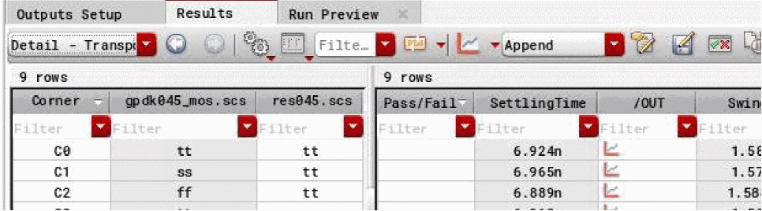

B
ADE Assembler Environment Variables
This appendix provides a list of variables that you can use to control the characteristics of the ADE Assembler environment or the simulations run from this environment.
The environment variables for ADE Assembler have been divided in the following partitions:
- maestro.license
- maestro.assembler
- maestro.caa
- maestro.calcVal
- maestro.commonTestSetup
- maestro.debug
- maestro.distribute
- maestro.faultsimulation
- maestro.gui
- maestro.logging
- maestro.lscs
- maestro.plotting
- maestro.monte
- maestro.results
- maestro.script
- maestro.setupdb
- maestro.simulation
- maestro.sla
- maestro.test
- maestro.waveSpec
- maestro.mts
- adexl.algorithm
- adexl.setupdb
- adexl.test
- adexl.simulation
- adexl.distribute
- adexl.monte
- adexl.historyNamePrefix
- adexl.icrpStartup
- adexl.results
- adexl.gui
- adexl.cpupdtr
- adexl.datasheet
- asimenv.startup
- adexl.plotting
- asimenv.plotting
- asimenv
maestro.assembler
defaultOutputColumns
maestro.assembler defaultOutputColumns string columnNameList
Description
Specifies the default list of columns to be shown on the Outputs Setup tab in ADE Assembler.
GUI Equivalent
Examples
envGetVal("maestro.assembler" "defaultOutputColumns")
envSetVal("maestro.assembler" "defaultOutputColumns" 'string "\"Test\" \"Name\" \"Type\" \"Details\" \"EvalType\" \"Plot\" \"Save\" \"Spec\" \"Weight\" \"Units\" \"Digits\" \"Notation\" \"Suffix\"")
Related Topics
Selecting Output Signals on the Schematic
outputSetupFilteringNumOutputThreshold
maestro.assembler outputSetupFilteringNumOutputThreshold int 0
Description
Specifies the threshold value for the number of rows that should exist in the output setup to show the filters. If the number of rows is more than this threshold, filters are displayed on the Outputs Setup tab.
Possible values: A positive integer value between 0 and 99999.
When the variable is set to 0, filters are always displayed. Set this value to any value other than 0 to specify the minimum number of rows on the Output Setup tab for the filters start appearing. Setting this to a large value closer to 99999 does not show filters.
GUI Equivalent
Examples
envGetVal("maestro.assembler" "outputSetupFilteringNumOutputThreshold")
envSetVal("maestro.assembler" "outputSetupFilteringNumOutputThreshold" 'int 0)
Related Topics
maestro.caa
enableDochecklimitFromDataView
maestro.caa enableDochecklimitFromDataView boolean { t | nil }
Description
Automatically synchronizes the dochecklimit setting on the Checks tab of the Simulator Options form when you change the Checks/Asserts setting in the Data View assistant.
Enabling this variable saves an extra step of enabling the dochecklimit simulation option, which is mandatory to run the checks and asserts simulations.
GUI Equivalent
Example
envGetVal("maestro.caa" "enableDochecklimitFromDataView")
envSetVal("maestro.caa" "enableDochecklimitFromDataView" 'boolean t)
Related Topics
Setting up Checks and Asserts Analysis
exportBatch
maestro.caa exportBatch int batchSize
Description
Specifies the batch size to be used while exporting the Checks/Asserts results to a CSV file.
GUI Equivalent
Example
envGetVal("maestro.caa" "exportBatch")
envSetVal("maestro.caa" "exportBatch" 'int 15000)
Related Topics
Exporting Checks/Asserts Results
refreshViolationPerCorner
maestro.caa refreshViolationPerCorner boolean { t | nil }
Description
Specifies whether to refresh the violations in the Checks/Asserts results view after the simulation for each corner is complete.
By default, the Checks/Asserts results view shows the results status as disabled until the simulation is complete for all points and corners. Setting this variable displays the updated violations data incrementally after the results of each corner are available in the database. Set this variable to t if you are running simulations for large designs and the simulation for each corner takes a few hours to complete.
GUI Equivalent
Example
envGetVal("maestro.caa" "refreshViolationPerCorner")
envSetVal("maestro.caa" "refreshViolationPerCorner" 'boolean t)
Related Topics
Running Simulations and Viewing Violations
maestro.calcVal
debug
maestro.calcVal debug int { 0 | 1 | 2 | 3 | 4 | 5 }
Description
Specifies the level of detail to be printed for calcVal expressions in the CIW and the log files. Depending on your debug requirements and the information you want read, you can specify an appropriate level.
The various levels set by this environment variable are:
-
0: At this level, the tool does not print any messages forcalcValexpressions. -
1: This is the default level at which the tool prints a message indicating whichcalcValexpression has incorrect values for arguments. This is the most basic information required to debug and correct thecalcValexpression. For example, if an expression failed because some of the points did not have values specified for the?matchParamsargument, the messages show the details of those points. -
2,3: In addition to the messages printed at level1, the tool prints more details for an error. For example, if the values for some points did not match the values specified for?matchParams, at level 2 the tool also prints the details of points for which the values match. The additional messages are prefixed withCALCVAL(2)orCALCVAL(3)indicating the level for which reporting is being done. -
4,5: These levels are for detailed debugging in special cases. It is recommended to set the variable to these values only when suggested by the Cadence Support team.
Depending on where the calcVal expressions are evaluated, you must set this variable in .cdsinit, .vdsinit, or CIW. For consistency, it is advised to set the same value for this variable in both .cdsinit and.vdsinit.
GUI Equivalent
Example
envGetVal("maestro.calcVal" "debug")
envSetVal("maestro.calcVal" "debug" 'int 2)
Related Topics
maestro.commonTestSetup
defaultComponents
maestro.commonTestSetup defaultComponentsstringcomma-separated-componentNames
Description
Specifies the default list of components to be displayed in the Multi-Test Editor in ADE Assembler.
Possible value: A string value containing a space-separated list of column names enclosed in double quotes.
Default value: "Design Variables,adeInfo,analyses,convergence,environmentOptions,faultRules,faults,graphicalStimuli,mdlOptions,modelSetup,mtsSetup,opPoints,simulationFiles,simulatorOptions,subckts,turboOptions"
GUI Equivalent
Example
envGetVal("maestro.commonTestSetup" "defaultComponents")
envSetVal("maestro.commonTestSetup" "defaultComponents" 'string "adeInfo,analyses,convergence,environmentOptions,faultRules,faults,graphicalStimuli,mdlOptions,modelSetup,mtsSetup,opPoints,outputs,simulationFiles,simulatorOptions,subckts,turboOptions,outputs")
Related Topics
Editing Multiple Tests in ADE Assembler
maestro.debug
beanstalk
maestro.debug beanstalk intdebugLevel
Description
Specifies the level of detail to be printed to the beanstalk monitor logs for simulations that are run using LSCS job control mode. Depending on your debug requirements and the information you want to read, you can specify an appropriate level.
-
0: This is the default level at which the tool prints basic error, information, or warning messages. No debugging information is displayed. -
1: At this level, the tool prints some information required for debugging, which includes the timing information along with the basic messages. For example, the start and end time of a beanstalk process. There is no impact on the performance of the tool. -
2: In addition to the information printed at level 1, the tool prints the entire user-level debugging information for an error. This also includes the status change messages for a process. There might be some impact on the performance of the tool. -
3: At this level, the beanstalk monitor is enabled and the tool prints detailed debugging information suitable for advanced users. There might be significant impact on the performance of the tool.
To avoid any performance impact, it is recommended to reset this variable to 0 once you have finished debugging the simulations.
GUI Equivalent
Examples
envGetVal("maestro.debug" "beanstalk")
envSetVal("maestro.debug" "beanstalk" 'int 1)
Related Topics
mainVirtuoso
maestro.debug mainVirtuoso intdebugLevel
Description
Specifies the level of detail to be printed to the Virtuoso logs for simulations that are run using LSCS job control mode. Depending on your debug requirements and the information you want to read, you can specify an appropriate level.
-
0: This is the default level at which the tool prints basic error, information, or warning messages. No debugging information is displayed. -
1: Prints some information required for debugging, which includes the timing information along with the basic messages. For example, the start and end time of a Virtuoso process. There is no impact on the performance of the tool. -
2: In addition to the information printed at level 1, the tool prints the entire user-level debugging information for an error. This also includes the status change messages for a process. There might be some impact on the performance of the tool. -
3: At this level, the tool prints detailed debugging information suitable for advanced users. There might be significant impact on the performance of the tool.
To avoid any performance impact, it is recommended to reset this variable to 0 once you have finished debugging the simulations.
GUI Equivalent
Examples
envGetVal("maestro.debug" "mainVirtuoso")
envSetVal("maestro.debug" "mainVirtuoso" 'int 1)
Related Topics
netlisting
maestro.debug netlisting intdebugLevel
Description
Specifies the level of detail to be printed to the netlister logs for simulations that are run using LSCS job control mode. Depending on your debug requirements and the information you want to read, you can specify an appropriate level.
-
0: This is the default level at which the tool prints basic error, information, or warning messages. No debugging information is displayed. -
1: Prints some information required for debugging, which includes the timing information along with the basic messages. For example, the start and end time of a netlisting process. There is no impact on the performance of the tool. -
2: In addition to the information printed at level 1, the tool prints the entire user-level debugging information for an error. This also includes the status change messages for a process. There might be some impact on the performance of the tool. -
3: At this level, the tool prints detailed debugging information suitable for advanced users. There might be significant impact on the performance of the tool.
To avoid any performance impact, it is recommended to reset this variable to 0 once you have finished debugging the simulations.
GUI Equivalent
Examples
envGetVal("maestro.debug" "netlisting")
envSetVal("maestro.debug" "netlisting" 'int 1)
Related Topics
simAndEval
maestro.debug simAndEval intdebugLevel
Description
Specifies the level of detail to be printed to simulation job logs and expression evaluator logs for simulations that are run using LSCS job control mode. Depending on your debug requirements and the information you want to read, you can specify an appropriate level.
-
0: This is the default level at which the tool prints basic error, information, or warning messages. No debugging information is displayed. -
1: Prints some information required for debugging, which includes the timing information along with the basic messages. For example, the start and end time of a netlisting process. There is no impact on the performance of the tool. -
2: In addition to the information printed at level 1, the tool prints the entire user-level debugging information for an error. This also includes the status change messages for a process. There might be some impact on the performance of the tool. -
3: At this level, the tool prints detailed debugging information suitable for advanced users. There might be significant impact on the performance of the tool.
To avoid any performance impact, it is recommended to reset this variable to 0 once you have finished debugging the simulations.
GUI Equivalent
Examples
envGetVal("maestro.debug" "simAndEval")
envSetVal("maestro.debug" "simAndEval" 'int 1)
Related Topics
maestro.distribute
- commandJobTerminateTimeoutBeforeKill
- continueICRPNumRetriesToWaitForGUIRecoveredResDB
- inferCommandStatusFromProxy
- maxNetlistingJobsForLocal
- showErrorForNonExistingJobPolicy
jobCleanupTimeoutBeforeKill
maestro.distribute jobCleanup TimeoutBeforeKill int timeSeconds
Description
Specifies the time for which ADE Explorer or ADE Assembler should wait before killing an ICRP job when a connection with an ICRP is lost or after 20 seconds have elapsed since it sent a command to an ICRP to clean up and exit.
By default, there is no wait time, and ADE Explorer or ADE Assembler kills the job immediately after the events mentioned above occur. When LSF is used as the job distribution utility, this may result in an incorrect reporting of status of the LSF job containing the ICRP as "killed by owner" whereas the process might have exited successfully. This is because in addition to the ICRP, an LSF job contains some more services, such as cdsNameServer, clsbd, osFSLockD and cdsXvnc. If the exit of any of these services remains pending before ADE Explorer or ADE Assembler kills the job, the status is returned as "killed by owner".
To avoid this incorrect reporting of status, set this variable to a positive value between 1 and 3600 seconds. ADE Explorer or ADE Assembler will wait for the specified time before killing an ICRP job.
GUI Equivalent
Examples
envGetVal("maestro.distribute" "jobCleanup TimeoutBeforeKill")
envSetVal("maestro.distribute" "jobCleanupTimeoutBeforeKill" 'int 20)
Related Topics
commandJobTerminateTimeoutBeforeKill
maestro.distribute commandJobTerminateTimeoutBeforeKill int timeSeconds
Description
Specifies the time in seconds for which ADE Assembler or ADE Explorer should wait between sending the signal TERM and sending the signal KILL when it decides to kill a command job. The signals TERM and KILL are operating system level signals.
Suppose you are using LSF and specify a command such as bsub -K or bsub -Is. ADE Assembler or ADE Explorer kills the command job by first sending the signal TERM to the running job. It then sends the signal KILL to ensure that the job is killed. You can use commandJobTerminateTimeoutBeforeKill to configure this time interval. For example, if you configure the timeout to 5 secs, ADE Assembler or ADE Explorer will send signal TERM and wait for 5 secs before sending the signal KILL. This prevents the premature kill of the job by the signal KILL when it is handling the signal TERM. A premature kill leads to the LSF command job reporting a status "Exits with exit code <number>" instead of "<job>_killed by owner".
To avoid this incorrect reporting of status, set this variable to a positive value between 1 and 3600 seconds. ADE Explorer or ADE Assembler will wait for the specified time before sending the signal KILL to kill a command job.
GUI Equivalent
Examples
envGetVal("maestro.distribute" "commandJobTerminateTimeoutBeforeKill")
envSetVal("maestro.distribute" " commandJobTerminateTimeoutBeforeKill" 'int 1)
Related Topics
continueICRPNumRetriesToWaitForGUIRecoveredResDB
maestro.distribute continueICRPNumRetriesToWaitForGUIRecoveredResDB int numTimes
Description
Specifies the number of times ADE Assembler checks for a notification about the successful copy of data from /tmp to NFS before continuing with the simulation after Virtuoso closes abruptly.
When continueICRPRunOnAbruptGUIExit is set to t, ADE Assembler continues the simulation run even if Virtuoso closes abruptly or unexpectedly. Before continuing the simulation, ADE Assembler copies data from /tmp to NFS and waits for the copy to complete. If the copy of data to NFS is complete within the number of times specified by continueICRPNumRetriesToWaitForGUIRecoveredResDB (at an interval of one second), the simulation is continued. If the copy of data to NFS is not complete within the given number of retry checks, the simulation is stopped.
Possible Values: A positive integer value.
GUI Equivalent
Examples
envGetVal("maestro.distribute" "continueICRPNumRetriesToWaitForGUIRecoveredResDB" )
envSetVal("maestro.distribute" "continueICRPNumRetriesToWaitForGUIRecoveredResDB" 'int 20)
Related Topics
inferCommandStatusFromProxy
maestro.distribute inferCommandStatusFromProxy cyclic {"Always" | "Never" | "GuessFromCommand"}
Description
Specifies whether ADE Explorer or ADE Assembler should consider the jobs for ICRP or LSCS job control modes to be interactive or not so as to infer their status from a local shell or a proxy process.
-
"Always":Specifies that the job is always interactive. Use this value when you are sure that every job would be interactive because if it is not, job distribution might not work correctly. -
"Never":Specifies that the job is never interactive. -
"GuessFromCommand":The tool will treat the jobs to be interactive only when interactive flags or commands are given. To know about the interactive flags that you can use, refer to Specifying a Command for DRMS.
The tool guesses the known interactive flags or commands only for LSF, SGE and Network Computer. If you have any other DRMS, The tool will not be able to understand whether the jobs are interactive or not. In such case, set this variable to "Always".
Default Value: "GuessFromCommand"
GUI Equivalent
Examples
envGetVal("maestro.distribute" "inferCommandStatusFromProxy")
envSetVal("maestro.distribute" "inferCommandStatusFromProxy" 'cyclic "Never")
Related Topics
maxNetlistingJobsForLocal
maestro.distrubute maxNetlistingJobsForLocal int maxJobs
Description
Specifies the maximum number of jobs allowed to be set for the netlisting services to be used when the distribution method is set to Local or Remote-Host. A warning message is displayed if you set a value higher than the value specified by this variable in the Max Jobs field on the Netlisting tab.
Possible values: A positive integer withing the range of 1 and 500 sets the maximum number of jobs allowed to be set for the netlisting services.
GUI Equivalent
Example
envGetVal("maestro.distrubute" "maxNetlistingJobsForLocal int 50")
envSetVal("maestro.distrubute" "maxNetlistingJobsForLocal" 'int 50)
Related Topics
showErrorForNonExistingJobPolicy
maestro.distribute showErrorForNonExistingJobPolicy boolean { t | nil }
Description
Specifies whether to show an error message when the user-specified job policy is not found. The default is t, which means that an error message is displayed.
GUI Equivalent
Examples
envGetval("maestro.distribute" "showErrorForNonExistingJobPolicy")
envSetVal("maestro.distribute" "showErrorForNonExistingJobPolicy" 'boolean t)
Related Topics
maestro.faultsimulation
- defaultConfidenceLevel
- defaultBridgeFaultRes
- defaultOpenFaultRes
- defaultStuckAtFaultRes
- dropUndetectedSimErrorsInFaultDroppingFlow
- handleErrorsAs
- handleSimulationErrorsAs
- suppressAddToFaultGroupsPrompt
- warnWhenSimsExceed
defaultConfidenceLevel
maestro.faultsimulation defaultConfidenceLevel float defaultConfidenceLevel
Description
Specifies the default resistance for bridge faults. This value is displayed in the Confidence Level field of the Sampling and Stop Criteria Settings form.
GUI Equivalent
Examples
envGetval("maestro.faultsimulation" "defaultConfidenceLevel")
envSetVal("maestro.faultsimulation" "defaultConfidenceLevel" 'float "97")
Related Topics
Specifying Fault Sampling Options and Auto Stop Criteria
defaultBridgeFaultRes
maestro.faultsimulation defaultBridgeFaultRes string t_defaultResValue
Description
Specifies the default resistance for bridge faults. This value is displayed in the Bridge Resistance (ohm) field of the Fault Rules form.
GUI Equivalent
Examples
envGetval("maestro.faultsimulation" "defaultBridgeFaultRes")
envSetVal("maestro.faultsimulation" "defaultBridgeFaultRes" 'string "10")
Related Topics
defaultOpenFaultRes
maestro.faultsimulation defaultOpenFaultRes string t_defaultResValue
Description
Specifies the default resistance for open faults. This value is displayed in the Open Resistance (ohm) field of the Fault Rules form.
GUI Equivalent
Examples
envGetval("maestro.faultsimulation" "defaultOpenFaultRes")
envSetVal("maestro.faultsimulation" "defaultOpenFaultRes" 'string "1G")
Related Topics
defaultStuckAtFaultRes
maestro.faultsimulation defaultStuckAtFaultRes string t_defaultResValue
Description
Specifies the default resistance for stuck-at faults. This value is displayed in the Bridge Resistance (ohm) field of the Fault Rules form.
GUI Equivalent
Examples
envGetval("maestro.faultsimulation" "defaultStuckAtFaultRes")
envSetVal("maestro.faultsimulation" "defaultStuckAtFaultRes" 'string "100")
Related Topics
dropUndetectedSimErrorsInFaultDroppingFlow
maestro.faultsimulation dropUndetectedSimErrorsInFaultDroppingFlow boolean { t | nil }
Description
Specifies how to handle simulation errors in the fault dropping flow while merging results of multiple fault simulations. By default, all undetected simulation errors are dropped and not merged.
GUI Equivalent
Examples
envGetval("maestro.faultsimulation" "dropUndetectedSimErrorsInFaultDroppingFlow")
envSetVal("maestro.faultsimulation" "dropUndetectedSimErrorsInFaultDroppingFlow" 'boolean t)
Related Topics
Merging Results from Multiple Fault Simulations
handleErrorsAs
maestro.faultsimulation handleErrorsAs cyclic { "undetected" | "detected" | "ignore" }
Description
Specifies how to consider all fault expression evaluation errors in fault simulation results. By default, they are considered as undetected.
-
undetected: All fault expression evaluation errors are included in the count of undetected faults. -
detected: All fault expression evaluation errors are included in the count of detected faults. -
ignore: All fault expression evaluation errors are ignored. They are not included in the count of detected or undetected errors.
GUI Equivalent
Examples
envGetval("maestro.faultsimulation" "handleErrorsAs")
envSetVal("maestro.faultsimulation" "handleErrorsAs" 'cyclic "undetected")
Related Topics
Viewing Summary of Fault Simulation Results
handleSimulationErrorsAs
maestro.faultsimulation handleSimulationErrorsAs cyclic { "undetected" | "detected" | "ignore" }
Description
Specifies how to handle faults that have simulation errors caused by convergence issues. By default, they are considered as undetected.
-
undetected: All simulation errors caused by convergence issues are included in the count of undetected faults. This is the default value. -
detected: All simulation errors caused by convergence issues are included in the count of detected faults. -
ignore: All simulation errors caused by convergence issue are ignored. They are not included in the count of detected or undetected errors.
GUI Equivalent
Examples
envGetval("maestro.faultsimulation" "handleSimulationErrorsAs")
envSetVal("maestro.faultsimulation" "handleSimulationErrorsAs" 'cyclic "undetected")
Related Topics
Viewing Summary of Fault Simulation Results
dropUndetectedSimErrorsInFaultDroppingFlow
suppressAddToFaultGroupsPrompt
maestro.faultsimulation suppressAddToFaultGroupsPrompt boolean { t | nil }
Description
Controls the display of a message box before adding a fault rule to a fault group if no fault list is generated for the selected fault rule or its fault list is not up to date.
-
t: Shows a message box when the fault list is not generated for the fault rule or it is not up to date. -
nil: Does not show any message box when the fault list is not generated or is not up to date. The tool always generates the fault list for the specified fault rule.
GUI Equivalent
Examples
envGetVal("maestro.faultsimulation" "suppressAddToFaultGroupsPrompt")
envSetVal("maestro.faultsimulation" "suppressAddToFaultGroupsPrompt" 'boolean nil)
Related Topics
warnWhenSimsExceed
maestro.faultsimulation warnWhenSimsExceed int maxSim
Description
Controls the maximum number of simulations allowed for the Fault Simulation run mode. If the number of simulations exceed this number, ADE Assembler shows an error.
Possible value is a positive integer within the range of 0 to 1000000.
GUI Equivalent
Examples
envGetVal("maestro.faultsimulation" "warnWhenSimsExceed")
envSetVal("maestro.faultsimulation" "warnWhenSimsExceed" 'int 8000)
Related Topics
maestro.gui
- alwaysEnableSaveButton
- autoExpandSetupStatesSubTree
- copytoRunPlanFromActiveSetup
- displayAgingModelFiles
- defaultAgingPlacementType
- defaultAgingModelFiles
- displayFixedTestVariables
- displayImplicitSignals
- defaultReliabilityMode
- detailTransposeViewShowTest
- enableManualRefresh
- enableWCCfromRunPlanInActiveSetup
- envVarCategoriesForDump
- hideStringResultsFailures
- ignoreLockHistoryForReliability
- manualResultsViewRefresh
- openExplorerOnTestDoubleClicked
- removeDuplicateCornersInResultMerge
- showCapacitanceView
- showOverriddenValueForSpec
- showHistoryPrefixToolbar
- showRedundantPointsinDT
alwaysEnableSaveButton
maestro.gui alwaysEnableSaveButton boolean { t | nil }
Description
By default, whenever there are unsaved changes, maestro cellviews have the Save button enabled in edit mode. However, in certain design management systems, you might observe that this button is not enabled in edit mode. In such scenarios, you can set this environment variable to t to always keep the Save button enabled.
GUI Equivalent
Examples
envGetVal("maestro.gui" "alwaysEnableSaveButton")
envSetVal("maestro.gui" "alwaysEnableSaveButton" 'boolean t)
autoExpandSetupStatesSubTree
maestro.gui autoExpandSetupStatesSubTree boolean { t | nil }
Description
Controls whether the Setup States tree in the Data View assistant of ADE Assembler is expanded while applying a filter.
GUI Equivalent
Examples
envGetVal("maestro.gui" "autoExpandSetupStatesSubTree")
envSetVal("maestro.gui" "autoExpandSetupStatesSubTree" 'boolean t)
copytoRunPlanFromActiveSetup
maestro.gui copytoRunPlanFromActiveSetup boolean { t | nil }
Description
Enables or disables the Copy to Run Plan command in the shortcut menu of global variables, design variables, parameters, and corners in the Data View assistant. You can use the Copy to Run Plan command to copy the selected objects from the active setup to one or all runs in the run plan.
GUI Equivalent
Examples
envGetVal("maestro.gui" "copytoRunPlanFromActiveSetup")
envSetVal("maestro.gui" "copytoRunPlanFromActiveSetup" 'boolean nil)
Related Topics
Modifying a Run in the Run Plan
displayAgingModelFiles
maestro.gui displayAgingModelFiles boolean { t | nil }
Description
Shows or hides Aging Model Files on the Reliability Analysis Setup form.
-
t: Shows the Aging Model Files command on the Reliability Analysis Setup form. -
nil: Hides the Aging Model Files command on the Reliability Analysis Setup form.
GUI Equivalent
Aging Model Files on the Reliability Analysis Setup form
Examples
envGetVal("maestro.gui" "displayAgingModelFiles")
envSetVal("maestro.gui" "displayAgingModelFiles" boolean t)
Related Topics
Specifying the Reliability Analysis Setup
defaultAgingPlacementType
maestro.gui defaultAgingPlacementType cyclic { "Before Standard Model" | " After Standard Model" }
Description
Determines whether to print the aging-specific model files before or after the standard model files in the netlist.
-
Before Standard Model: Prints the aging model file before the standard model file in the netlist. -
After Standard Model: Prints the aging model file after the standard model file in the netlist.
Default value: After Standard Model
GUI Equivalent
Aging/Self-Heating Model Setup form – Placement of the Model Files in Netlist
Examples
envGetVal("maestro.gui" "defaultAgingPlacementType" cyclic)
envSetVal("maestro.gui" "defaultAgingPlacementType" 'cyclic "After Standard Model")
Related Topics
defaultAgingModelFiles
maestro.gui defaultAgingModelFiles 'string list-of-path-to-aging-model-file-and-model-section
Description
Specifies the model files to be used as the default aging model files.
Possible values: A string containing the following values:
- Either the absolute path or the relative path to the model files, which you want to use as the default aging model files, are saved
- Model Section (optional)
GUI Equivalent
Examples
To set a single model file as the default aging model file:
envSetVal("maestro.gui" "defaultAgingModelFiles")
To set multiple model files as the default aging model files:
envSetVal("maestro.gui" "defaultAgingModelFiles" 'string "((\"<path_to_the_aging_model_file\" \"<model_section>\")(\"<path_to_the_aging_model_file\" \"<model_section>\"))")
displayFixedTestVariables
maestro.gui displayFixedTestVariables boolean { t | nil }
Description
Controls the display of the fixed design variables in the gray headers on the Results tab when the values of the variables are fixed for some tests and swept for others.
-
t: Shows the values of the fixed design variables on the gray headers of a design point. This is the default value. -
nil: Hides the values of the fixed design variables. The variable is shown only in the header of only those design points for which it is swept.
GUI Equivalent
Examples
envGetVal("maestro.gui" "displayFixedTestVariables")
envSetVal("maestro.gui" "displayFixedTestVariables" 'boolean nil)
Related Topics
Showing Variable and Parameter Values for Design Points on the Results Tab
displayImplicitSignals
maestro.gui displayImplicitSignals boolean { t | nil }
Description
Selects or deselects the Implicit Signals command in the Configure what is shown in the table drop-down list on the toolbar of the Outputs Setup tab.
-
t: Selects the Implicit Signals command in the Configure what is shown in the table drop-down list on the toolbar of the Outputs Setup tab. -
nil: Deselects the Implicit Signals command in the Configure what is shown in the table drop-down list on the toolbar of the Output Setup tab.
GUI Equivalent
Examples
envGetVal("maestro.gui" "displayImplicitSignals")
envSetVal("maestro.gui" "displayImplicitSignals" 'boolean nil)
displayJobSummaryBar
maestro.gui displayJobSummaryBar boolean { t | nil }
Description
Controls the default display of job status in the Run Summary assistant.
-
t: Displays the job status of simulations using the Job Summary view. -
nil: Displays the job status of simulations using the Job List view. You can manually switch to the Job Summary view.
GUI Equivalent
Examples
envGetVal("maestro.gui" "displayJobSummaryBar")
envSetVal("maestro.gui" "displayJobSummaryBar" 'boolean t)
Related Topics
defaultReliabilityMode
maestro.gui defaultReliabilityMode 'cyclic { "AgingScenarios"| "Reliability" }
Description
Specifies the reliability mode according to which UI fields are displayed on the Corners Setup form.
-
Reliability: Displays the form fields that specify the test names for the fresh, stress, and aged run, and the variables to be used by each run. This mode is used for reliability analysis. -
AgingScenarios: Displays the form fields to specify the test names for the fresh, stress, and aged run, and the corner conditions for stress and aged tests. This mode is used to set up multiple reliability scenarios.
GUI Equivalent
Examples
envGetVal("maestro.gui" "defaultReliabilityMode")
envSetVal("maestro.gui" "defaultReliabilityMode" 'cyclic "AgingScenarios")
detailTransposeViewShowTest
maestro.gui detailTransposeViewShowTest boolean { t | nil }
Description
Controls whether to show the Detail - Transpose with Test result view type in the Select the results view drop-down list on the Results tab in ADE Assembler. By default, this result view type is hidden. You can display it when you need to see the test name along with results in the Detail - Transpose format. The Detail - Transpose with Test result view is helpful for the purpose of pivot table creation.
The Detail - Transpose with Test view is different from the Detail - Transpose view in the following ways:
- The Test column displays the test names.
-
All common outputs that are saved for multiple tests are combined in a single column for each output.
-
The columns for corner variables that do not vary are hidden. For example, in the
Detail-Transposeview shown below, values are not varying in the highlighted columns.
TheDetail-Transpose with Testview hides these columns.

GUI Equivalent
Examples
envGetVal("maestro.gui" "detailTransposeViewShowTest")
envSetVal("maestro.gui" "detailTransposeViewShowTest" 'boolean t)
Related Topics
Exporting Results in Excel Format for Pivot Tables
defaultReliabilityMode
maestro.gui removeDuplicateCornersInResultMerge 'boolean { t | nil }
Description
Specifies whether to remove duplicate corners created by expanding the corner groups.
-
Reliability: Displays the form fields that specify the test names for the fresh, stress, and aged run, and the variables to be used by each run. This mode is used for reliability analysis. -
AgingScenarios: Displays the form fields to specify the test names for the fresh, stress, and aged run, and the corner conditions for stress and aged tests. This mode is used to set up multiple reliability scenarios.
GUI Equivalent
Examples
envGetVal("maestro.gui" "defaultReliabilityMode")
envSetVal("maestro.gui" "defaultReliabilityMode" 'cyclic "AgingScenarios")
Related Topics
Running the Reliability Simulation
enableManualRefresh
maestro.gui enableManualRefresh boolean { t | nil }
Description
Controls the state, enabled or disabled, of the Manual Refresh check box in the Run Options form when the check box has been enabled using the manualResultsViewRefresh environment variable.
-
t: Enables the Manual Refresh check box on the Run Options form -
nil: Disables the Manual Refresh check box on the Run Options form. This is the default value.
GUI Equivalent
Examples
envGetVal("maestro.gui" "enableManualRefresh")
envSetVal("maestro.gui" "enableManualRefresh" 'boolean t)
Related Topics
enableWCCfromRunPlanInActiveSetup
maestro.gui enableWCCfromRunPlanInActive Setup boolean { t | nil }
Description
Specifies the default state, enabled or disabled, for the worst case corners copied from the run plan setup to the active setup in ADE Assembler.
-
t: Enables the worst case corners copied from the run plan setup to the active setup. -
nil: Enables the worst case corners copied from the run plan setup to the active setup.
GUI Equivalent
Examples
envGetVal("maestro.gui" "enableWCCfromRunPlanInActiveSetup")
envSetVal("maestro.gui" "enableWCCfromRunPlanInActiveSetup" 'boolean t)
Related Topics
Setting Up a Run Plan with the Worst Case Corners Run Mode
envVarCategoriesForDump
maestro.gui envVarCategoriesForDump string list-of-variable-categories
Description
Specifies a comma-separated list of product categories for which you want to write the current values of environment variables in a file to be used while debugging simulations. Only those variables that have been changed from their default values are written to the file.
By default, this variable is set to "asimenv,auCore,adexl,maestro".
GUI Equivalent
Examples
envGetVal("maestro.gui" "envVarCategoriesForDump")
envSetVal("maestro.gui" "envVarCategoriesForDump" 'string "asimenv,maestro")
Related Topics
ignoreLockHistoryForReliability
maestro.gui ignoreLockHistoryForReliability boolean { t | nil }
Description
Specifies whether to lock the history specified in the stress file configuration. You can use the Configure Stress File form to set up the stress file that you want to be reused in running an age simulation.
The default value is t, which indicates that the history used in the stress file configuration is not locked.
For example, if a history Interactive.6 is specified in a stress file configuration and this environment variable is set to nil, the history Interactive.6 is locked so that it cannot be renamed or deleted.
GUI Equivalent
Examples
envGetVal("maestro.gui" "ignoreLockHistoryForReliability")
envSetVal("maestro.gui" "ignoreLockHistoryForReliability" 'boolean nil)
Related Topics
manualResultsViewRefresh
maestro.gui manualResultsViewRefresh 'boolean { t | nil }
Description
Enables or disables the feature that allows you to control the refresh of the Yield view in the Results tab while a simulation run is in progress. When the feature is enabled, the Manual Refresh check box is added to the Run Options form. You can use this check box to control the display of results on the Results tab while a simulation run is in progress, or wait until the run is complete or you manually refresh the tab.
When you select the Manual Refresh check box, the Results tab is not updated while the run is in progress. You can control the state of the Manual Refresh check box by using the enableManualRefresh environment variable.
A command, Refresh to view results, is added to the toolbar of the Yield view in the Results tab. You can use this command to show or update the results at any time during or after the run.
-
t: Displays the Manual Refresh check box on the Run Options form and sets it the default value, which is selected. -
nil: Hides the Manual Refresh check box on the Run Options form.
GUI Equivalent
Example
envGetVal("maestro.gui" "manualResultsViewRefresh")
envSetVal("maestro.gui" "manualResultsViewRefresh" 'boolean t)
Related Topic
openExplorerOnTestDoubleClicked
maestro.gui openExplorerOnTestDoubleClicked boolean { t | nil }
Description
Controls whether a test opens in ADE Explorer when the test name is double-clicked in the Data View assistant of ADE Assembler.
-
t: Opens the test for editing in ADE Explorer when you double-click the test name in the Tests tree of the Data View assistant of ADE Assembler. -
nil: Does not open the test for editing in ADE Explorer. Instead, it enables renaming of the test.
You can use the down arrow ( ) icon to the left of the test name in the Tests tree to open the test in ADE Explorer.
GUI Equivalent
Examples
envGetVal("maestro.gui" "openExplorerOnTestDoubleClicked")
envSetVal("maestro.gui" "openExplorerOnTestDoubleClicked" 'boolean t)
Related Topic
removeDuplicateCornersInResultMerge
maestro.gui removeDuplicateCornersInResultMerge boolean { t | nil }
Description
Specifies whether to remove duplicate corners from a reference history when conflicting corner names are found in expanded corner groups copied from the master history while merging simulation results.
-
t: Removes the corners with duplicate names found in the reference history. -
nil: Retains the duplicate corner from the reference history and renames the conflicting corner copied from the master history.
GUI Equivalent
Examples
envGetVal("maestro.gui" "removeDuplicateCornersInResultMerge")
envSetVal("maestro.gui" "removeDuplicateCornersInResultMerge" 'boolean t)
Related Topics
How does ADE Assembler merge variables and corners?
showCapacitanceView
maestro.gui showCapacitanceView boolean { t | nil }
Description
Controls whether to show the Capacitance results view in the drop-down list on the Results tab.
-
t: Shows the Capacitance results view for each history. -
nil: Does not show the Capacitance results view.
GUI Equivalent
Examples
envGetVal("maestro.gui" "showCapacitanceView")
envSetVal("maestro.gui" "showCapacitanceView" 'boolean t)
Related Topics
showOverriddenValueForSpec
maestro.gui showOverriddenValueForSpec boolean { t | nil }
Description
Controls whether to show the overridden values for specifications in the Detail and Detail - Transpose result views.
-
t: If the specification values are overridden for corners, the Spec column in the results table shows the global spec and the overridden spec value, which is being used to calculate the pass or fail status of an output. -
nil: The Spec column in the results table shows the textCorners overridden, orNominal and Corners overriddenbut does not show the global spec and the overridden spec value.
GUI Equivalent
Examples
envGetVal("maestro.gui" "showOverriddenValueForSpec" )
envSetVal("maestro.gui" "showOverriddenValueForSpec" 'boolean t)
showHistoryPrefixToolbar
maestro.gui showHistoryPrefixToolbar boolean { t | nil }
Description
Controls whether to show the History Name toolbar.
GUI Equivalent
Examples
envGetVal("maestro.gui" "showHistoryPrefixToolbar" )
envSetVal("maestro.gui" "showHistoryPrefixToolbar" ’boolean nil)
Related Topics
showSchematicCrossSelectionHyperlinkInSimLog
maestro.gui showSchematicCrossSelectionHyperlinkInSimLog cyclic {"Auto" | "Always" | "Never"}
Description
Controls whether to show hyperlinks to instances and nets in the Spectre log file saved for a simulation run. You can use this variable to enable, disable, or selectively show hyperlinks depending on the size of the netlist or amap file.
-
Auto: Hyperlinks are not shown in the Spectre log file if the size of the netlist or amap file is greater than 200M. -
Always: Hyperlinks are always shown in the Spectre log file. With this setting, you might observe performance issues with large netlist files. -
Never: Hyperlinks to instances or nets in the schematic are never shown in the Spectre log file.
GUI Equivalent
Examples
envGetVal("maestro.gui" "showSchematicCrossSelectionHyperlinkInSimLog" )
envSetVal("maestro.gui" "showSchematicCrossSelectionHyperlinkInSimLog" 'cyclic "lways")
Related Topics
maestro.logging
databaseDir
maestro.logging databaseDir string filepath-to-message-database
Description
Specifies the file path to be used to save the message database for the simulations run in LSCS job control mode. By default, this database is saved at the same location as the results database.
GUI Equivalent
Example
envGetVal("maestro.logging" "databaseDir")
envSetVal("maestro.logging" "databaseDir" 'string "")
Related Topics
level
maestro.logging level cyclic { "configFile" | "info" | "process" | "warn" | "error" }
Description
Specifies the severity level of messages to be saved in the message database file in LSCS job control mode. By default, ADE Assembler saves all information, process, warning, and error messages from all the components—netlist service, simulation monitor, Spectre, and vds—involved in running a simulation. For large simulations, saving all these messages can result in a huge file requiring a large disk space. Use this environment variable to save only specific types of messages to help you monitor the simulations. Other types of messages are not saved.
-
configFile:Saves the messages if their levels match the levels specified in the config file for each component—netlist service, simulation monitor, Spectre, and vds—involved in running a simulation. -
info:Saves all information, process, warning, and error messages from all components. -
process:Saves only process, warning, and error messages from all components. -
warn:Saves only warning and error messages from all components. -
error:Saves only error messages from all components.
GUI Equivalent
Example
envGetVal("maestro.logging" "level")
envSetVal("maestro.logging" "level" 'cyclic "configFile")
Related Topic
maxNumberSimulatorNoteWarn
maestro.logging maxNumberSimulatorNoteWarn int maxNum
Description
Specifies the maximum number of information (note) and warning messages to be saved for each simulator. These messages are saved in the message database for LSCS job control mode.
Possible value: A positive integer value. When set to 0, no limit is applied and all messages from the simulators are saved.
GUI Equivalent
Examples
envSetVal("maestro.logging" "maxNumberSimulatorNoteWarn")
envSetVal("maestro.logging" "maxNumberSimulatorNoteWarn" 'int 0)
Related Topics
maestro.lscs
- defaultNetlistingJobPolicy
- defaultSimulationJobPolicy
- jobHealthCheckInterval
- preferNetlistingSameTest
- runBeforeSimulation
- useLSCSFor3rdPartySimulators
defaultNetlistingJobPolicy
maestro.lscs defaultNetlistingJobPolicy string jobPolicyName
Description
Specifies the default job policy for netlisting jobs in newly created maestro views.
The default value is Netlisting Default.
GUI Equivalent
Example
envGetVal("maestro.lscs" "defaultNetlistingJobPolicy")
envSetVal("maestro.lscs" "defaultNetlistingJobPolicy" 'string "myNetlistingJobPolicy")
defaultSimulationJobPolicy
maestro.lscs defaultSimulationJobPolicy string jobPolicyName
Description
Specifies the default job policy for newly created maestro views.
The default value is Maestro Default.
GUI Equivalent
Example
envGetVal("maestro.lscs" "defaultSimulationJobPolicy")
envSetVal("maestro.lscs" "defaultSimulationJobPolicy" 'string "mySimuJobPolicy")
jobHealthCheckInterval
maestro.lscs jobHealthCheckInterval integer time-interval
Description
Configures the time interval after which an active Simulation Monitor job on a farm must access its corresponding token in the message queue that is maintained by the maestro session that started the job. If the job does not access the token after the specified time, the LSCS job control mode considers the job to be non-responsive and stops this job. It also removes the icon of this job from the Run Summary assistant.
If you set this variable to a value less than or equal to zero, ADE Explorer or ADE Assembler uses the default value, 60 seconds.
GUI Equivalent
Example
envGetVal("maestro.lscs" "jobHealthCheckInterval")
envSetVal("maestro.lscs" "jobHealthCheckInterval" 'integer 100)
Related Topics
preferNetlistingSameTest
maestro.lscs preferNetlistingSameTest boolean { t | nil }
Description
Specifies whether a netlister service job should continue to create netlists for more points in the same test instead of picking up points from another test. After the netlist for all the available points of a test is complete, the job can start netlisting points from other tests in the cellview.
If your setup has multiple tests for which netlist creation can be done in parallel by multiple jobs, set this variable to t. By preferring to netlist the points from the same test, you can save the time required to reconfigure the job for another test.
If the netlist creation is to be done for a single test at a time, either because there is only one test or the setup for a test contains calcVal expressions dependent on other tests, set this variable to nil.
GUI Equivalent
Example
envSetVal("maestro.lscs" "preferNetlistingSameTest" 'boolean nil)
runBeforeSimulation
maestro.lscs runBeforeSimulation string list-of-space-separated-queue-names
Description
Specifies a UNIX command or executable to be run by the Simulation Monitor service in LSCS job control mode before running a simulation.
Possible value: A string specifying the complete command to be run.
.cdsenv or .cdsinit file before Virtuoso is launched. You cannot modify it mid-session by using the envSetVal SKILL API in the CIW.GUI Equivalent
Examples:
envGetVal("maestro.lscs" "runBeforeSimulation")
envSetVal("maestro.lscs" "runBeforeSimulation" 'string "cp netlist ./../../../../netlist")
Related Topics
useLSCSFor3rdPartySimulators
maestro.lscs useLSCSFor3rdPartySimulators boolean { t | nil }
Description
To use a third-party simulator in an LSCS simulation, set this environment variable to t. The default is nil.
GUI Equivalent
Examples
envGetVal("maestro.lscs" "useLSCSFor3rdPartySimulators")
envSetVal("maestro.lscs" "useLSCSFor3rdPartySimulators" 'boolean t)
maestro.plotting
reevaluateBeforePlotAll
maestro.script reevaluateBeforePlotAll boolean { t | nil }
Description
Specifies whether to re-evaluate the expressions for outputs before running the Plot All command.
-
t: ADE Assembler re-evaluates all output expressions before running the Plot All command. Use this option when you need to reflect the changes in output expressions. -
nil: Does not evaluate the output expressions before running the Plot All command. Use this option to improve the performance of the Plot All command when you are sure that there were no changes in the output expressions or you do not want to see the impact of any change.
GUI Equivalent
Examples
envGetVal("maestro.plotting" "boolean" nil)
envSetVal("maestro.plotting" 'boolean nil)
Related Topics
Plotting Across All Corners and Sweeps
maestro.monte
reliabilitymode
maestro.monte reliabilitymode cyclic { "singlestress" | "multistress" }
Description
Specifies the default value for the Reliability Mode drop-down list on the Monte Carlo options form.
GUI Equivalent
Examples
envGetVal("maestro.monte" "reliabilitymode")
envSetVal("maestro.monte" "reliabilitymode" 'cyclic "singlestress")
Related Topics
maxPointsPerJob
maestro.monte maxPointsPerJob integer numMaxPointsPerJob
Description
Specifies the maximum number of points to be allocated to each job when a Monte Carlo simulation is run in LSCS job control mode. By default, this variable is set to 0 and the points are assigned automatically depending on the number of samples, tests, corners, and jobs. However, you can use this variable to specify the maximum number of points that can be allocated per job depending on the available resources.
GUI Equivalent
Monte Carlo options form – Points per job – Group automatically
Monte Carlo options form – Points per job – Max
Examples
envGetVal("maestro.monte" "maxPointsPerJob")
envSetVal("maestro.monte" "maxPointsPerJob" int 10)
maestro.results
- continueRunOnRdbFatalError
- defaultReliabilityFilterDirectory
- defaultRunStatisticItems
- enableRunStatisticInfoDisplay
- forceRdbStatusEnable
- forceRdbStatusIgnoreList
- forceRdbStatusTo
- keepTmpRdbForReevaluation
- postLayoutToSchematicInRelReport
- RDBCreatePolicy
- RDBTmpDirDiskQuotaLowerLimitInMegabytes
- RDBNFSDiskQuotaLowerLimitInMegabytes
- RDBTmpTouchInterval
- RDBSynchronous
- saveEvaluationErrorResults
- saveFingersForOpParams
- showDeviceCheckCumulativeEndTime
- sumDeviceFingerCurrents
- waiveViolationsByCorner
continueRunOnRdbFatalError
maestro.results continueRunOnRdbFatalError boolean { t | nil }
Description
Lets you continue the simulation run in case of a fatal disk error. By default, ADE Explorer or ADE Assembler stops the run if the disk on which results are saved becomes inaccessible during run. Set this environment variable to t if you want to skip the job that failed due to disk issues and continue the run with the remaining jobs.
-
t: Skips the job with disk error and continues the simulation run with the remaining jobs. However, in this case, some results that were saved on the disk with issues may not be accessible. -
nil: Stops the run in case of a disk error. This is the default value.
GUI Equivalent
Examples
envGetVal ("maestro.results" "continueRunOnRdbFatalError")
envSetVal ("maestro.results" "continueRunOnRdbFatalError" 'boolean t)
defaultReliabilityFilterDirectory
maestro.results defaultReliabilityFilterDirectory string pathToDirectory
Description
Specifies the path to the directory where custom reliability report filters are saved. The default value is ".", which indicates that custom filters are saved in the .cadence directory under the dfII/maestro/reliability-filters subdirectory.
GUI Equivalent
Example
envGetVal ("maestro.results" "defaultReliabilityFilterDirectory")
envSetVal ("maestro.results" "defaultReliabilityFilterDirectory" ’string "/home/user/customFilter")
Related Topics
Creating a Custom Reliability Data Filter
defaultRunStatisticItems
maestro.results defaultRunStatisticItems string space-or-comma-separated-Items
Description
Specifies a space- or comma-separated list of information items to be displayed when the Run Statistics option is selected in the Configure what is shown in the table list in the Results tab
This variable can only be used if:
- The job policy mode for the maestro session is LSCS.
-
The variable enableRunStatisticInfoDisplay is set to
t. - The specified simulator is Spectre or AMS.
-
memory: Peak memory consumption for Spectre -
threads: Number of threads used by Spectre -
jobId: LSF job identifier. This value can only be specified if the distribution method for the job policy is LBS. -
host: The name of the host that the simulation is running on -
nodes: The node number in the Spectre inventory -
startTime: Start time of the simulation run -
endTime: End time of the simulation run -
elapsedTime: Time elapsed time for the Spectre simulation run -
idinrun: Simulation point ID in run -
dspfSubstitution: Subckt information related to DSPF substitution from the Spectre output file -
tranIntrinsicElapsedTime: Transient intrinsic elapsed time for the Spectre simulation run -
cpuTime: CPU time reported by Spectre -
cpuUtil: CPU utilization reported by Spectre -
jobLog: Name of the log file for a job used to run simulation -
serviceLog: Name of the netlister service log file -
recommendedThreads: Number of threads recommended Spectre X or APS for a simulation
Default value: memory,threads,recommendedThreads,jobId,host,nodes,startTime,endTime,elapsedTime,tranIntrinsicElapsedTime,cpuTime,cpuUtil
GUI Equivalent
Example
envGetVal("maestro.results" "defaultRunStatisticItems")
envSetVal("maestro.results" "defaultRunStatisticItems" 'string "memory,threads,jobId,host,nodes,startTime,endTime,elapsedTime")
Related Topics
enableRunStatisticInfoDisplay
maestro.results enableRunStatisticInfoDisplay boolean { t | nil }
Description
Adds the Run Statistics option to the Configure what is shown in the table list on the toolbar of the Results tab.
-
t: The Run Statistics option gets added to the Configure what is shown in the table list on the toolbar of the Results tab. -
nil: No new options are added.
GUI Equivalent
Examples
envGetVal("maestro.results" "enableRunStatisticInfoDisplay")
envSetVal("maestro.results" "enableRunStatisticInfoDisplay" 'boolean t)
Related Topics
forceRdbStatusEnable
maestro.results forceRdbStatusEnable boolean { t | nil }
Description
Shows or hides the Change Results Status to Done command in the context-sensitive menu of a history or the point results that have status other than those mentioned by forceRdbStatusIgnoreList.
GUI Equivalent
Examples
envGetVal("maestro.results" "forceRdbStatusEnable")
envSetVal("maestro.results" "forceRdbStatusEnable" 'boolean nil)
Related Topics
Enabling Re-Evaluation for Unsuccessful Simulations
forceRdbStatusIgnoreList
maestro.results forceRdbStatusIgnoreList string comman-separated-list-of-status
Description
A comma-separated list of status to be ignored while forcefully setting the status by the Change Results Status to Done command.
Default value: "done, pending, canceled, disabled"
GUI Equivalent
Examples
envGetVal("maestro.results" "forceRdbStatusIgnoreList")
envSetVal("maestro.results" "forceRdbStatusIgnoreList" 'string "error, sim err, done, pending, canceled")
Related Topics
Enabling Re-Evaluation for Unsuccessful Simulations
forceRdbStatusTo
maestro.results forceRdbStatusTo cyclic status-to-be-set
Description
Specifies the status to which the Change Results Status to Done command must change the status of point results that have status other than those specified by forceRdbStatusIgnoreList.
Possible values are "error", "sim err", "pending", "running", "netlisting", "netlisting finished", "simulating", "simulation finished", "evaluating", "done", "partialDone", "canceled", "suspended", "eval err", "netl err", "upld err", "disabled", "uploading netlist", "netlist uploaded".
GUI Equivalent
Examples
envGetVal("maestro.results" "forceRdbStatusTo")
envSetVal("maestro.results" "forceRdbStatusTo" 'cyclic "evaluated")
Related Topics
Enabling Re-Evaluation for Unsuccessful Simulations
keepTmpRdbForReevaluation
maestro.results keepTmpRdbForReevaluation boolean { t | nil }
Description
Specifies whether to retain the results database in the /tmp directory on the local host after the simulation run is complete. Retaining a copy in the /tmp directory enables fast data access for the display or reevaluation of results. In case of space constraints for /tmp directory, set this variable to nil so that the results database at /tmp are removed after the simulation run is complete. This variable is used only when the RDBCreatePolicy variable is set to "TmpDir".
-
t :After the simulation run is complete, the results database in /tmp directory is copied to the NFS disk. /tmp is retained to enable fast data access for the display or reevaluation of results. -
nil: After the simulation run is complete, the results database is copied to the NFS disk and removed from the temporary location. /tmp is immediately removed to free up the space.
GUI Equivalent
Examples
envGetVal("maestro.results" "keepTmpRdbForReevaluation")
envSetVal("maestro.results" "keepTmpRdbForReevaluation" 'boolean nil)
Related Topics
postLayoutToSchematicInRelReport
maestro.results postLayoutToSchematicInRelReport boolean { t | nil }
Description
Specifies whether to show instance names in post-layout format or in schematic format in the reliability report.
The default is nil, which indicates that instance names are shown in post-layout format in the reliability report.
GUI Equivalent
Examples
envGetVal("maestro.results" "postLayoutToSchematicInRelReport")
envSetVal("maestro.results" "postLayoutToSchematicInRelReport" 'boolean nil)
Related Topics
RDBCreatePolicy
maestro.results RDBCreatePolicy cyclic {TmpDir | NFSDisk}
Description
Specifies a policy that defines the location where ADE Explorer or ADE Assembler needs to save the results database.
-
TmpDir: Initially, ADE Explorer or ADE ADE Assembler saves the results database at a temporary location (/tmp directory) on the local host for faster read and write operations. After the simulation is complete, it copies the /tmp database to the NFS disk in small blocks at periodic time intervals of 50 seconds so that next time when you reload the history from the maestro view, it is opened from the NFS disk. By default, after the simulation run is complete, the results database created for this run in the /tmp directory is copied to the NFS disk and then immediately removed from /tmp. However, if you want to retain the results in /tmp for fast data access to display or reevaluate results, set thekeepTmpRdbForReevaluationenvironment variable tot.
The default temporary location is /tmp, but you can change it by setting theTMPDIRshell environment variable. For example, to change the location to tmp2, use thesetenv TMPDIR /tmp2command before launching Virtuoso or add following line in the.cdsinitfile:setShellEnvVar("TMPDIR=/tmp2")
-
NFSDisk: ADE Explorer or ADE Assembler directly writes the results database on the NFS disk.
GUI Equivalent
Examples
envGetVal("maestro.results" "RDBCreatePolicy")
envSetVal("maestro.results" "RDBCreatePolicy" 'cyclic "TmpDir")
Related Topics
RDBTmpDirDiskQuotaLowerLimitInMegabytes
maestro.results RDBTmpDirDiskQuotaLowerLimitInMegabytes int 2
Description
Specifies the minimum disk quota (in Megabytes) to be maintained for the /tmp directory where ADE Explorer or Assembler saves the results for faster read or write operations with the permanent results database.
Possible values: A positive integer value.
GUI Equivalent
Examples
envGetVal("maestro.results" "RDBTmpDirDiskQuotaLowerLimitInMegabytes")
envSetVal("maestro.results" "RDBTmpDirDiskQuotaLowerLimitInMegabytes" 'int 5)
Related Topics
RDBNFSDiskQuotaLowerLimitInMegabytes
maestro.results RDBNFSDiskQuotaLowerLimitInMegabytes int 100
Description
Specifies the lower limit of NFS disk quota. If the available NFS disk space becomes lower than this limit, ADE Assembler suspends the current simulation and flags a warning message to free up some space and resume simulation.
Possible values: A positive integer
GUI Equivalent
Examples
envGetVal("maestro.results" "RDBNFSDiskQuotaLowerLimitInMegabytes")
envSetVal("maestro.results" "RDBNFSDiskQuotaLowerLimitInMegabytes" 'int 100)
RDBTmpTouchInterval
maestro.results RDBTmpTouchInterval int timeInterval
Description
Specifies the time interval, in seconds, at which the RDB file located in the /tmp directory must be touched by ADE Explorer or Assembler. This prevents a cleanup script running on the system from accidentally clearing the data in the /tmp file. This option is useful in case a simulation takes a long time and there are infrequent updates in the RDB.
To disable this feature, set the variable to 0.
GUI Equivalent
Examples
envGetVal("maestro.results" "RDBTmpTouchInterval")
envSetVal("maestro.results" "RDBTmpTouchInterval" 'int 3500)
Related Topics
RDBSynchronous
maestro.results RDBSynchronous cyclic {"Off" | "Normal" | "Full" | "Extra"}
Description
Specifies how the results database of ADE Explorer and ADE Assembler should commit transactions to the disk. The values of this variable define the extent of data safety in exceptional cases when it is not possible to complete the transaction in a normal way. For example, in case of a power failure or insufficient disk space to save data.
Possible values for this variable are:
-
Off: The RDB file on disk remains in an invalid state for short periods of time due to OS caching of file updates. In case of a failure due to insufficient disk space or power failure, RDB may be left in an unreadable state.
While reading or writing data, if the tool detects that the RDB file has been damaged or corrupted, it deletes the RDB file because it is unrecoverable.
This value provides the best performance, but does not offer any protection against data loss in exceptional circumstances that can lead to data loss. If other options are selected, the data on disk will remain safe although there are chances of some data loss. This is the default value. -
Normal: The RDB file is kept in a valid state by flushing data to disk after each update. If the flush is unsuccessful, the database is rolled back to its previous state. There is still a small possibility of the RDB becoming unreadable after failure if the OS flushes data to disk in an order that is different than the requested order. This value provides a good balance between data safety and performance. -
Full: The RDB file is kept in a valid state even if data is flushed out of order. This value guarantees data safety, but that comes with performance degradation when the RDB is handling large results. -
Extra: Provides extra durability in the event of an update that is followed closely by a power loss. Similar toFull, this value guarantees data safety, but that comes with performance degradation when the RDB is handling large results.
The values of this variable are same as those used by the synchronous PRAGMA in SQLite.
GUI Equivalent
Examples
envGetVal("maestro.results" "RDBSynchronous")
envSetVal("maestro.results" "RDBSynchronous" 'cyclic "Full")
saveEvaluationErrorResults
maestro.results saveEvaluationErrorResults boolean { t | nil }
Description
Saves the simulation data for the points with evaluation errors.
GUI Equivalent
Examples
envGetVal("maestro.results" "saveEvaluationErrorResults")
envSetVal("maestro.results" "saveEvaluationErrorResults" 'boolean t)
Related Topics
Specifying Simulation Results Directory Location
saveFingersForOpParams
maestro.results saveFingersForOpParams boolean { t | nil }
Description
Enables or disables dumping of all fingers of the selected DSPF device instances in the save statement in netlist. When set to t, the tool uses wildcard characters to save the fingers.
-
t: Thesavestatement in netlist contains wildcard characters to let the tool save the operating points for all fingers of the selected device instances.
Example:save i0.MM0*:gm -
nil: Thesavestatement in netlist does not contain any wildcard character. The tool saves a single finger of the selected device instance.
Example:save i0.MM0:gm
GUI Equivalent
Examples
envGetVal("maestro.results" "saveFingersForOpParams")
envSetVal("maestro.results" "saveFingersForOpParams" 'boolean t)
Related Topics
Customizing Netlist Creation Using Environment Variable
showDeviceCheckCumulativeEndTime
maestro.results showDeviceCheckCumulativeEndTime boolean { t | nil }
Description
Adds the column End Time to the cumulative Checks/Asserts results view.
GUI Equivalent
Examples
envGetVal("maestro.results" "showDeviceCheckCumulativeEndTime")
envSetVal("maestro.results" "showDeviceCheckCumulativeEndTime" 'boolean t)
sumDeviceFingerCurrents
maestro.results sumDeviceFingerCurrents boolean { t | nil }
Description
Enables or disables dumping of the sum total of terminal currents for all fingers of a multi-fingered device in the save statement in netlist.
-
t: The save statement in netlist contains the sum total of terminal current of all fingers of a multi-fingered device. -
nil: The save statement in netlist contains a separate terminal current value for one of the fingers of a multi-fingered device.
GUI Equivalent
Examples
envGetVal("maestro.results" "sumDeviceFingerCurrents")
envSetVal("maestro.results" "sumDeviceFingerCurrents" 'boolean t)
Related Topics
waiveViolationsByCorner
maestro.results waiveViolationsByCorner boolean { t | nil }
Description
Allows to waive corner-specific violations in the Checks/Asserts results.
-
t: Waives corner-specific violations. -
nil: Waives all relevant violations across all corners and design points.
GUI Equivalent
Examples
envGetVal("maestro.results" "waiveViolationsByCorner")
envSetVal("maestro.results" "waiveViolationsByCorner" 'boolean nil)
Related Topics
maestro.script
accessMode
maestro.script accessMode cyclic { "a" | "r" }
Description
Defines the access mode to be used in the maeLoadSetup function call added to the run plan script saved from the Run Plan assistant in ADE Assembler. The access mode is set using the ?mode argument of maeLoadSetup.
For example, when the value of the accessMode variable is set to “r”, the command in the saved script has ?mode set to "r", as shown below.
maeLoadSetup(“libName” “cellName” “viewName” ?mode “r”)
-
a: The?modeargument ofmaeLoadSetupis set to“r”. That is, the setup will loaded in read mode. -
r: The?modeargument ofmaeLoadSetupis set to“a”. That is, the setup will loaded in append or edit mode.
GUI Equivalent
Examples
envGetVal("maestro.script" "accessMode")
envSetVal("maestro.script" "accessMode" 'cyclic "a")
Related Topics
exitAfterFinished
maestro.script exitAfterFinished boolean { t | nil }
Description
Specifies if the following commands are to be added to the run plan script saved from the Run Plan assistant:
maeWaitUntilDone('All)
exit
These commands ensure that the script exits only after all the simulations have finished running.
t.-
t: The commands mentioned above are to be added to the run plan script. -
nil: The commands are not added to the run plan script.
GUI Equivalent
Examples
envGetVal("maestro.script" "exitAfterFinished")
envSetVal("maestro.script" "exitAfterFinished" 'boolean t)
Related Topics
writeCallbackForSingleRun
maestro.script writeCallbackForSingleRun boolean { t | nil }
Description
Specifies if a callback procedure needs to be included in the Run Plan script. When this variable is set to t, ADE Assembler makes the following changes in the script:
-
Defines the
RunFinishedCallbackfunction that you can customize to include the statements you want to execute after the simulation is run;; Post-simulation callback. Called after each run. define( RunFinishedCallback(session runID) printf("Run ID %L has finished\n" runID)
-
Adds a call to the
maeExportOutputViewfunction;; Use maeExportOutputView() or maeWriteDatasheet() in to report the simulation results, or maeReadResDB() for custom-processing maeExportOutputView( ?fileName simplifyFilename( strcat("./" axlGetHistoryName(axlGetRunData(session runID)) ".csv")) ?view "Detail-Transpose") )
-
Adds the
?callbackargument in themaeRunSimulationcallmaeRunSimulation(?run "Run.0" ?callback "RunFinishedCallback" ?waitUntilDone nil
GUI Equivalent
Example
envGetVal("maestro.script" "writeCallbackForSingleRun")
envSetVal("maestro.script" "writeCallbackForSingleRun" 'boolean nil)
Related Topics
maestro.setupdb
allowLocalCornersInRunPlan
maestro.setupdb allowLocalCornersInRunPlan boolean { t | nil }
Description
Allows or disallows creation of
-
t:You can create local corners in a run plan. -
nil:You cannot create local corners in a run plan. If any local corner already exists in the run plan before you set the variable tonil, it is converted to a reference corner if a corner with the same name exits in the active setup. If no corner is found with the same name in the active setup, it is removed from the run plan too.Appropriate messages are displayed in the CIW providing information about these changes.
GUI Equivalent
Examples
envGetVal("maestro.setupdb" "allowLocalCornersInRunPlan" )
envSetVal("maestro.setupdb" "allowLocalCornersInRunPlan" 'boolean t)
Related Topics
autoDeleteMalformedLockedSDB
maestro.setupdb autoDeleteMalformedLockedSDB boolean { t | nil }
Description
Specifies whether to display a warning message when a malformed lock-state file, such as maestro.sdb.cdslck and history.sdb.cdslck is found.
-
t: The locked files are deleted automatically and a warning message is displayed in Virtuoso Studio CIW. -
nil: A pop-up message is displayed asking whether to delete the malformed locked files or to continue the operation after canceling the deletion.
The default is t, which means that the malformed lock files are deleted automatically without displaying a pop-up message.
GUI Equivalent
Examples
envGetval("maestro.setupdb" "autoDeleteMalformedLockedSDB")
envSetVal("maestro.setupdb" "autoDeleteMalformedLockedSDB" 'boolean nil)
Related Topics
syncWithSLA
maestro.setupdb syncWithSLA cyclic { "Popup_Sync" | "Popup_NoSync" | "Sync" | "NoSync" )
Description
Specifies the default action to be performed before running simulation in a scenario when the Data View and Setup Library assistants are out of sync.
-
Popup_Sync: Default. In graphical mode, displays a message to let you choose whether you want to synchronize the Data View and Setup Library assistants before running the simulation. In non-graphical mode, it is considered the same asSync. -
Popup_NoSync: In graphical mode, displays a message to let you choose whether you want to synchronize the Data View and Setup Library assistants before running the simulation. In non-graphical mode, it is considered the same asNoSync. -
Sync: Runs a simulation after synchronizing the Data View and Setup Library assistants without displaying any message. -
NoSync: Runs a simulation without synchronizing the Data View and Setup Library assistants and displaying any message.
GUI Equivalent
Examples
envGetVal("maestro.setupdb" "syncWithSLA")
envSetVal("maestro.setupdb" "syncWithSLA" 'cyclic "Popup_NoSync")
envSetVal("maestro.setupdb" "syncWithSLA" 'cyclic "Sync")
envSetVal("maestro.setupdb" "syncWithSLA" 'cyclic "NoSync")
Related Topics
maestro.simulation
- allowVariableCheckingDuringConfigSweep
- behaviorOnPcellParamChangedByCallback
- checkDesignInIdenticalHistory
- checkSimFilesInReportIdenticalHistory
- checkSpectreStatus
- dspfNamePrefixSimInfo
- exprEvalMaxTries
- exprEvalMaxTries
- groupRunA
- ignoreAnalysisCheckInResourceEstimation
- ignoreRunModeCheckInResourceEstimation
- interactiveA
- maxRDBSyncWait
- minGroupSizeSplitAcrossIdleJobs
- reportChangesAfterComparingSetupWithHistories
- reportIdenticalHistoryIgnoreElementsList
- retainNetlistLinkForRerun
- reuseNetlistForRerun
- runModesForIdenticalHistoryCheck
- simulationServiceJobPolicy
- tempDirectory
- useReportIdenticalHistory
- useSelfCDFInPostLayoutNetlist
- waitToAcquireROLock
- warnWhenWCCSimsExceed
allowVariableCheckingDuringConfigSweep
maestro.simulation allowVariableCheckingDuringConfigSweep boolean { t | nil }
Description
Specifies whether to run checks to ensure that all design variables used in the simulation are added to all cellviews in config sweeps. Running this check helps in eliminating simulation errors due to missing variables in the swept designs.
GUI Equivalent
Examples
envGetVal("maestro.simulation" "allowVariableCheckingDuringConfigSweep")
envSetVal("maestro.simulation" "allowVariableCheckingDuringConfigSweep" 'boolean t)
Related Topics
behaviorOnPcellParamChangedByCallback
maestro.simulation behaviorOnPcellParamChangedByCallback cyclic { "none" | "warning" | "none" }
Description
Specifies whether to show an error or warning message when the user-specified Pcell parameter value is out of the valid range returned by the validating CDF callback. By default, the variable is set to "none" and incorrect values of Pcell parameters are replaced with valid values during netlisting.
-
error: Shows an error message for an invalid value of a Pcell parameter. The simulation is stopped so that you can change the parameter value and rerun the simulation. -
warning: Shows a warning message for an invalid value of a Pcell parameter. The tool automatically updates the parameter value to make it valid and continues with netlist creation. -
none: The tool automatically updates the parameter value to make it and continues with netlist creation. No error or warning message is printed.
GUI Equivalent
Examples
envGetVal("maestro.simulation" "behaviorOnPcellParamChangedByCallback" )
envSetVal("maestro.simulation" "behaviorOnPcellParamChangedByCallback" 'cyclic "none")
Related Topics
checkDesignInIdenticalHistory
maestro.simulation checkDesignInIdenticalHistory boolean { t | nil }
Specifies whether to check for any changes in the schematic or config view of the design while looking for identical histories.
-
t: Enables checking for any changes in the design. -
nil: Disables checking for any changes in the design.
GUI Equivalent
Run Options form – Design (schematic/configurations)
Examples
envGetVal("maestro.simulation" "checkDesignInIdenticalHistory" )
envSetVal("maestro.simulation" "checkDesignInIdenticalHistory" 'boolean t)
Related Topics
checkSimFilesInReportIdenticalHistory
maestro.simulation checkSimFilesInReportIdenticalHistory boolean { t | nil }
Description
Specifies whether to check for any changes in the simulation files, such as definition file and model file, while looking for identical histories.
-
t: Enables checking for any changes in the simulation files. -
nil: Disables checking for any changes in the simulation files.
GUI Equivalent
Run Options from – Simulation files
Examples
envGetVal("maestro.simulation" "checkSimFilesInReportIdenticalHistory")
envSetVal("maestro.simulation" "checkSimFilesInReportIdenticalHistory" 'boolean t)
Related Topics
dspfNamePrefixSimInfo
maestro.simulation dspfNamePrefixSimInfo string "simulator-name"
Description
Specifies the simulator whose namePrefix property, specified in the Simulation Information tab of the Edit CDF form, is considered for adding name prefixes to devices in the netlist. This is useful when you want to match the schematic device names with the DSPF names.
The default is "", which means that no simulator-specific namePrefix is specified. It is recommended to provide a valid namePrefix so that the netlisted devices in the DSPF file have the correct prefix and the simulation does not fail.
GUI Equivalent
Examples
envGetVal("maestro.simulation" "dspfNamePrefixSimInfo")
envSetVal("maestro.simulation" "dspfNamePrefixSimInfo" 'string "auCDL")
envSetVal("maestro.simulation" "dspfNamePrefixSimInfo" 'string "auLvs")
envSetVal("maestro.simulation" "dspfNamePrefixSimInfo" 'string "hspiceD")
envSetVal("maestro.simulation" "dspfNamePrefixSimInfo" 'string "spectre")
Related Topics
exprEvalMaxTries
maestro.simulation exprEvalMaxTries int 3
Description
Specifies the maximum number of tries to launch a new expression evaluator process when the process that was already evaluating an expression stops abruptly.
This variable is used only when the LSCS job control mode is used.
Possible values: A positive integer value.
GUI Equivalent
Examples
envGetVal("maestro.simulation" "exprEvalMaxTries")
envSetVal("maestro.simulation" "exprEvalMaxTries" 'int 1)
Related Topics
endNetlistingImmediatelyOnStop
maestro.simulation endNetlistingImmediatelyOnStop boolean { t | nil }
Description
Specifies whether to end all netlisting jobs immediately after the simulation run is stopped. By default, this variable is set to t, which means that if you forcefully stop a simulation run, the tool immediately stops all netlisting jobs associated with that run. This helps in saving netlisting resources occupied by large designs that would otherwise continue to netlist even if the related run is not active. The released resources can be used for the other active runs or histories.
GUI Equivalent
Examples
envGetVal("maestro.simulation" "endNetlistingImmediatelyOnStop")
envSetVal("maestro.simulation" "endNetlistingImmediatelyOnStop" 'boolean nil)
Related Topics
Setting up the Netlisting Job Policy for LSCS
groupRunA
maestro.simulation groupRunA boolean { t | nil }
Description
Enables or disables group submission of points to the available ICRP jobs.
-
t: Enables group submission of points. ADE Assembler divides the points to be simulated into groups and submits those to the available ICRP jobs at a time. Instead of communicating with ADE Assembler for each point individually, an ICRP runs the simulation for all the points in the group together and returns the results for the group. This enhances the performance of the simulation run. -
nil: Disables group submission of points. ADE Assembler submits a single point to an ICRP at a time.
t, the points are grouped at the beginning of the simulation. Once the simulation is in progress, any updates made to the value of the Max. Jobs field in the Job Policy Setup form would not be reflected.GUI Equivalent
Examples
envGetVal("maestro.simulation" "groupRunA")
envSetVal("maestro.simulation" "groupRunA" 'boolean t)
Related Topics
ignoreAnalysisCheckInResourceEstimation
maestro.simulation ignoreAnalysisCheckInResourceEstimation boolean { t | nil }
Description
Specifies whether you want to be notified through a message box when the analysis specified in the setup is not supported for resource estimation by Spectre. The message box lets you decide whether to proceed with the default resource estimation values from the job policy or any other history.
Spectre currently supports resource estimation for only hb and tran analyses. If the setup contains an enabled analysis other than these two, ADE Explorer or ADE Assembler reuse values from an available history. If there is no history available, it uses the default memory and CPU value specified in the Default Values group on the Resources tab of the Job Policy Setup form.
-
t: Does not show any message box. The tool automatically reuses the memory and CPU value from an available history or the Job Policy Setup form. -
nil: Shows a message box when the analysis specified in the setup is not supported for resource estimation by Spectre.
GUI Equivalent
Examples
envGetVal("maestro.simulation" "ignoreAnalysisCheckInResourceEstimation")
envSetVal("maestro.simulation" "ignoreAnalysisCheckInResourceEstimation" 'boolean t)
Related Topics
Setting up the Resource Estimation Options for LSCS
ignoreRunModeCheckInResourceEstimation
maestro.simulation ignoreRunModeCheckInResourceEstimation boolean { t | nil }
Description
Specifies whether you want to be notified through a message box when the current run mode in the setup is not supported for resource estimation by Spectre. The message box lets you decide whether to proceed with the default resource estimation values from the job policy or any other history.
Spectre does not support resource estimation for Improve Yield, Sensitivity Analysis, and Single Run, Sweeps and Corner with statistical corners. If any of these run modes is set in the current setup, ADE Explorer or ADE Assembler shows an error message and prompts you to confirm whether to proceed by reusing estimated resource values from an available history or the default values from the job policy. However, the tool does not change the values already set in the Job Policy Setup form. If you do not want the tool to show this prompt and to use the available data by default, set this environment variable to nil.
-
t: Does not show any message box. The tool automatically reuses the memory and CPU value from the Job Policy Setup form. -
nil: Shows a message box when the current run mode in the setup is not supported for resource estimation by Spectre.
GUI Equivalent
Examples
envGetVal("maestro.simulation" "ignoreRunModeCheckInResourceEstimation")
envSetVal("maestro.simulation" "ignoreRunModeCheckInResourceEstimation" 'boolean t)
Related Topics
Setting up the Resource Estimation Options for LSCS
interactiveA
maestro.simulation interactiveA boolean { t | nil }
Description
Specifies whether the ICRPs need to submit points directly to a Spectre plugin. If netlist recreation and Spectre startup time is comparable to actual simulation time, significant performance improvement can be noticed when the new Spectre plugin is used.
This variable is applicable only for the Spectre simulator.
-
t: Each ICRP creates an initial netlist for the design and submits all the assigned points along with variable changes to a Spectre plugin. The plugin updates the netlist for each point by using the information about the variables. After the simulation for all the points is complete, Spectre plugin returns the results together for those points to the ICRP. This saves the overhead of Spectre startup, license checks, and netlisting separately for each point. -
nil: Each ICRP handles simulation for a single point at a time. For each point, it starts a new session with Spectre, checks out a license, creates a netlist, and runs simulation. After the simulation for a point is complete, Spectre returns the results to the ICRP and kills the session. This involves an overhead of repetitive tasks for each point, and impacts the performance when a simulation run involves a large number of sweep points and corners.
GUI Equivalent
Examples
envGetVal("maestro.simulation" "interactiveA")
envSetVal("maestro.simulation" "interactiveA" 'boolean t)
Related Topics
reportChangesAfterComparingSetupWithHistories
maestro.simulation reportChangesAfterComparingSetupWithHistories boolean { t | nil }
Description
Specifies whether ADE Assembler needs to print a message in the log file to report the changes found in the active setup after comparing it with the setup of the saved histories.
-
t: ADE runs a simulation if the current setup is different from the setup of the saved histories, and prints a message in the log file to report the changes found in the setup. -
nil:ADE runs a simulation, but no information about the changes in the setup is printed in the log file.
GUI Equivalent
Examples
envGetVal("maestro.simulation" "reportChangesAfterComparingSetupWithHistories")
envSetVal("maestro.simulation" "reportChangesAfterComparingSetupWithHistories" 'boolean nil)
Related Topics
reportIdenticalHistoryIgnoreElementsList
maestro.simulation reportIdenticalHistoryIgnoreElementsList string list-of-space-separated-element-or-setting
Description
Specifies the elements or settings that ADE Assembler should ignore while checking for identical histories.
Possible value: A string value containing a comma-separated list of settings to be ignored. You can specify any element name from the XML saved for the setup database or any environment variable used by ADE Assembler.
Default value: "plottingoptions, sortVariableValues, overwritehistoryname"
This default value indicates that ADE Assembler ignores any difference in these three settings:
- The plotting options specified on the Plotting/Printing Options form
-
The value of the
sortVariableValuesenvironment variable -
The value of the
overwriteHistoryNameenvironment variable
GUI Equivalent
Examples
envGetVal("maestro.simulation" "reportIdenticalHistoryIgnoreElementsList")
envSetVal("maestro.simulation" "reportIdenticalHistoryIgnoreElementsList" 'string "plottingoptions, sortVariableValues, overwritehistoryname")
Related Topics
retainNetlistLinkForRerun
maestro.simulation retainNetlistLinkForRerun boolean { t | nil }
Description
When you use the Rerun Unfinished/Error Points command, this variable retains netlist links for the points that reuse results from a previous history. The netlist links point to the designName/libName/cellName/results/maestro/psf/designName/netlist/netlist location in the previous history. This helps in saving disk space used to save netlists.
When this variable is set to nil and you rerun an unfinished simulation, the points for which the results are being reused contain a copy of the netlist saved during the previous run instead of retaining the symbolic link to the netlist file. The new points simulated in the rerun contain a link to the newly created netlist for the current run.
-
t: Retains links to the netlist of the previous history for the points that reuse results from that history. -
nil: Creates a copy of netlist in the netlist directory for the points that reuse results from that history. For other points that use the newly created netlist, a link to the psf/netlst directory of the new history is saved.
GUI Equivalent
Examples
envGetVal("maestro.simulation" "retainNetlistLinkForRerun")
envSetVal("maestro.simulation" "retainNetlistLinkForRerun" 'boolean t)
Related Topics
Simulating Only Unfinished or Erroneous Points
reuseNetlistForRerun
maestro.simulation reuseNetlistForRerun boolean t | nil
Description
Specifies whether the tool needs to create a netlist before rerunning a simulation for unfinished or error points. By default, netlister recreates a design netlist for every rerun. Set this variable to reuse the design netlist from the original simulation during rerun.
GUI Equivalent
Examples
envGetVal("maestro.simulation" "reuseNetlistForRerun")
envSetVal("maestro.simulation" "reuseNetlistForRerun" 'boolean t)
Related Topics
Simulating Only Unfinished or Erroneous Points
runModesForIdenticalHistoryCheck
maestro.simulation runModesForIdenticalHistoryCheck string list-of-queue-names
Description
Specifies the run mode for which the check to identify identical history needs to be run.
-
"SRSC" or \"Single Run, Sweeps and Corners\":Enables reporting of identical histories for the Single Run, Sweeps and Corners run mode. -
"MC" or "\Monte Carlo Sampling\":Enables reporting of identical histories for the Monte Carlo run mode. -
"GO" or "\Global Optimization\": Enables reporting of identical histories for the Global Optimization run mode. -
"LO" or "\Local Optimization\":Enables reporting of identical histories for the Local Optimization run mode. -
"SA" or "\Sensitivity Analysis\": Enables reporting of identical histories for the Sensitivity Analysis run mode. -
"FA" or "\Feasibility Analysis\":Enables reporting of identical histories for the Feasibility Analysis run mode.
GUI Equivalent
Examples
envGetVal("maestro.simulation" "runModesForIdenticalHistoryCheck")
envSetVal("maestro.simulation" "runModesForIdenticalHistoryCheck" 'string "SRSC GO LO")
simulationServiceJobPolicy
maestro.simulation simulationServiceJobPolicy string name-of-Job-Policy
Description
Specifies the name of the job policy to be used by the Simulation Manager process. By default, the policy for Simulation Manger is named as Simulation Manager Default and it is displayed in the Job Policy Name field of the of the Job Policy setup form.
GUI Equivalent
Examples
envGetVal("maestro.simulation" "simulationServiceJobPolicy")
envSetVal("maestro.simulation" "simulationServiceJobPolicy" 'string "SimMgrPol1")
Related Topics
Using Simulation Manager with LSCS
tempDirectory
maestro.simulation tempDirectory string path-to-directory simulationServiceJobPolicy
Description
Specifies the path to a directory where a maestro cellview saves the temporary data required to check the health of the netlist service processes and simulation monitor processes for LSCS job control mode. This directory is also used to save the local results database or the results for Real-Time Tuning.
Use this variable to specify a directory path that always exists and can accommodate temporary data. It is recommended to ensure that this location is on a disk that can be accessed fast for read and write operations.
GUI Equivalent
Examples
envGetVal("maestro.simulation" "tempDirectory")
envSetVal("maestro.simulation" "tempDirectory" 'string "/user/myDir/localPath")
Related Topics
Real-Time Tuning in ADE Explorer
useReportIdenticalHistory
maestro.simulation useReportIdenticalHistory boolean { t | nil }
Specifies whether to enable or disable reporting of identical histories before running simulation.
GUI Equivalent
Run Options form – Enable reporting of identical histories
Examples
envGetVal("maestro.simulation" "useReportIdenticalHistory")
envSetVal("maestro.simulation" "useReportIdenticalHistory" 'boolean t)
Related Topics
useSelfCDFInPostLayoutNetlist
maestro.simulation useSelfCDFInPostLayoutNetlist string list-of-simulator-names
Description
Specifies the list of simulators from which the simulation-specific CDF properties are to be used to apply name prefixes to devices.
For example, you specify the following:
envSetVal("maestro.simulation" "useSelfCDFInPostLayoutNetlist" 'string "ams hspiceD")
-
If the current simulator is
ams, the netlister will get thenamePrefixvalue foramsfrom the Simulation Information section of the Edit CDF form. -
If the current simulator is
hspiceD, the netlister will get thenamePrefixvalue forhspiceDfrom the Simulation Information section of the Edit CDF form. -
If the current simulator is
auLvs, the netlister will get thenamePrefixvalue forauCdlfrom the Simulation Information section of the Edit CDF form.
The default is "", which means that the namePrefix value from a different simulator can be used. It is recommended to provide a valid namePrefix so that the netlisted devices in the DSPF file have the correct prefix and the simulation does not fail.
GUI Equivalent
Examples
envGetVal("maestro.simulation" "useSelfCDFInPostLayoutNetlist")
envSetVal("maestro.simulation" "useSelfCDFInPostLayoutNetlist" 'string "ams")
envSetVal("maestro.simulation" "useSelfCDFInPostLayoutNetlist" 'string "ams auLvs")
envSetVal("maestro.simulation" "useSelfCDFInPostLayoutNetlist" 'string "auCdl auLvs hspiceD")
envSetVal("maestro.simulation" "useSelfCDFInPostLayoutNetlist" 'string "ams spectre hspiceD")
Related Topics
waitToAcquireROLock
maestro.simulation waitToAcquireROLock int timeSeconds
Description
Specifies the time period (in seconds) for which ADE Assembler needs to wait to obtain a lock on a read-only view to make any change in the setup or to run a simulation.
Possible values: An integer value between 1 and 100000.
GUI Equivalent
Examples
envGetVal("maestro.simulation" "waitToAcquireROLock")
envSetVal("maestro.simulation" "waitToAcquireROLock" 'int 300)
Related Topics
Working with Read-Only or Editable maestro Views
warnWhenWCCSimsExceed
maestro.simulation warnWhenWCCSimsExceed int maxSimulations
Description
Controls the maximum number of simulations for the Worst Case Corners run mode after which ADE Assembler shows a warning is displayed seeking confirmation to continue with the simulation run.
Possible values: A positive integer within the range of 0 and 1000000.
GUI Equivalent
Examples
envGetVal("maestro.simulation" "warnWhenWCCSimsExceed")
envSetVal("maestro.simulation" "warnWhenWCCSimsExceed" 'int 8000)
Related Topics
maestro.sla
autoUpdateTagForReference
maestro.sla autoUpdateTagForReference boolean { t | nil )
Description
Adds the name of the referenced setup as a tag for the variable or corner in the Data View assistant. If the setup name has leading and trailing whitespaces, they are removed and intermediate whitespaces are replaced with an underscore character. For example, if the setup name is ' Sweep Setup1 ', the tag added to the Data View is 'Sweep_Setup_1'.
Clicking the context-menu command Clear References in the Data View assistant removes the references as well as the tags. Clicking Sync with Reference Setup adds the tags back to the variable or corner even if it has been removed.
The default is nil, which means that the referenced setup name is not added as a tag for the specified variable or corner.
GUI Equivalent
Examples
envGetVal("maestro.sla" "autoUpdateTagForReference")
envSetVal("maestro.sla" "autoUpdateTagForReference" 'boolean t)
Related Topics
overwriteEntireCorner
maestro.sla overwriteEntireCorner boolean { t | nil }
Description
Overwrites the entire corner by using the entire corner as the smallest unit in the reference flow.
When set to nil, the variables, parameters, model files, and model groups are considered as independent units in the reference flow. This implies that you can have additional settings for corners in the Data View assistant.
GUI Equivalent
Examples
envGetVal("maestro.sla" "overwriteEntireCorner")
envSetVal("maestro.sla" "overwriteEntireCorner" 'boolean nil)
Related Topics
saveCompositeSetups
maestro.sla saveCompositeSetups boolean { t | nil )
Description
Saves a combination of all verification spaces that have been used in a session during simulation as a new verification space. This verification space includes the following:
You can reuse the saved settings, when required.
The default is nil, which means that the combined setups are not saved.
GUI Equivalent
Examples
envGetVal("maestro.sla" "saveCompositeSetups")
envSetVal("maestro.sla" "saveCompositeSetups" 'boolean t)
Related Topics
maestro.test
autoPromoteVarsToGlobal
maestro.test autoPromoteVarsToGlobal boolean { t | nil }
Description
Controls whether design variables are automatically added as global variables on the Data View and on the Variables tab of the Variables and Parameters pane.
-
t: All design variables are automatically added as global variables in the Global Variables tree on the Data View and the Variables tab of the Variables and Parameters pane. -
nil: Disables the automatic addition of design variables as global variables.
GUI Equivalent
Examples
envGetVal("maestro.test" "autoPromoteVarsToGlobal")
envSetVal("maestro.test" "autoPromoteVarsToGlobal" 'boolean t)
Related Topics
maestro.waveSpec
abstol
maestro.waveSpec abstol string list-of-space-separated-queue-names
Description
Specifies the default value for the Absolute Tolerance field on the Global Waveform Compare Settings form.
GUI Equivalent
Global Waveform Compare Settings form – Absolute Tolerance
Examples
envGetVal("maestro.waveSpec" "abstol")
envSetVal("maestro.waveSpec" "abstol" 'string "2")
Related Topics
biasShift
maestro.waveSpec biasShift string list-of-space-separated-queue-names
Description
Specifies the default value for the Bias Level field on the Global Waveform Compare Settings form.
Possible value: A positive integer value in string format.
GUI Equivalent
Global Waveform Compare Settings form – Bias level (y shift)
Examples
envGetVal("maestro.waveSpec" "biasShift")
envSetVal("maestro.waveSpec" "biasShift" 'string "2")
Related Topics
disableChecks
maestro.waveSpec disableChecks boolean { t | nil }
Description
Enables or disables checking of waveform specifications.
-
t: Enables checking of waveform specifications. -
nil: Disables checking of waveform specifications.
GUI Equivalent
Examples
envGetVal("maestro.waveSpec" "disableChecks")
envSetVal("maestro.waveSpec" "disableChecks" 'boolean t)
Related Topics
excludeTimes
maestro.waveSpec excludeTimes string list-of-space-separated-queue-names
Description
Specifies the default value for the Time Tolerance field on the Global Waveform Compare Settings form.
a comma-separated list of time ranges in the following format:
GUI Equivalent
Global Waveform Compare Settings form – Time Exclude (seconds)
Examples:
envGetVal("maestro.waveSpec" "excludeTimes")
envSetVal("maestro.waveSpec" "excludeTimes" 'string "")
Related Topics
reltol
maestro.waveSpec reltol string list-of-space-separated-queue-names
Description
Specifies the default value for the Relative Tolerance field on the Global Waveform Compare Settings form.
Possible values: A positive integer value in string format.
GUI Equivalent
Global Waveform Compare Settings form – Relative Tolerance
Examples
envGetVal("maestro.waveSpec" "reltol")
envSetVal("maestro.waveSpec" "reltol" 'string "2")
Related Topics
timeTolerance
maestro.waveSpec timeTolerance string list-of-space-separated-queue-names
Description
Specifies the default value for the Time Tolerance field on the Global Waveform Compare Settings form.
Possible value: A positive integer value in string format.
GUI Equivalent
Global Waveform Compare Settings form – Time Tolerance (seconds)
Examples
envGetVal("maestro.waveSpec" "timeTolerance")
envSetVal("maestro.waveSpec" "timeTolerance" 'string "2")
Related Topics
timeDelay
maestro.waveSpec timeDelay string list-of-space-separated-queue-names
Description
Specifies the default value for the Time Delay field on the Global Waveform Compare Settings form.
Possible value: A positive integer value in string format.
GUI Equivalent
Global Waveform Compare Settings form – Time Delay (x shift)
Example
envGetVal("maestro.waveSpec" "timeDelay")
envSetVal("maestro.waveSpec" "timeDelay" 'string "2")
Related Topics
compareAlgorithm
maestro.waveSpec compareAlgorithm string list-of-space-separated-queue-names
Desription
Specifies the default value for the Comparison Algorithm field on the Global Waveform Compare Settings form.
GUI Equivalent
Global Waveform Compare Settings form – Comparison Algorithm
Examples
envGetVal("maestro.waveSpec" "compareAlgorithm" )
envSetVal("maestro.waveSpec" "compareAlgorithm" 'string "Asymmetrical")
Related Topics
maestro.mts
MTSremoveOldConfigSetupAfterMigration
maestro.mts MTSremoveOldConfigSetupAfterMigration boolean { t | nil }
Description
Specifies whether to delete the existing MTS settings from the config view when an ADE L state is migrated to a maestro cellview.
-
t :Deletes the existing MTS settings during the migration. -
nil :Retains the existing config view during the migration.
GUI Equivalent
Examples
envGetVal("maestro.mts" "MTSremoveOldConfigSetupAfterMigration")
envSetVal("maestro.mts" "MTSremoveOldConfigSetupAfterMigration" 'boolean nil)
Related Topics
adexl.algorithm
linearModelR2
adexl.algorithm linearModelR2 int 90
Description
Specifies the R2 threshold for the linear model used in the reorder algorithms. A higher threshold leads to higher accuracy for the final linear model and therefore, takes more time to build. This variable is used when you run Monte Carlo for mismatch contribution analysis, yield verification with reorder samples, or for statistical corners creation using worst samples.
Possible values: A positive value between 80 and 99.
GUI Equivalent
Examples
envGetVal("adexl.algorithm" "linearModelR2")
envSetVal("adexl.algorithm" "linearModelR2" 'int 90)
Related Topics
quadraticModelR2
adexl.algorithm quadraticModelR2 int 90
Description
Specifies the R2 threshold for the quadratic model used in the reorder algorithms. A higher threshold leads to higher accuracy for the final algorithm model and therefore, takes more time to build.This variable is used when you run Monte Carlo for mismatch contribution analysis, yield verification with reorder samples, or for statistical corners creation using worst samples.
Possible values: integer - A positive integer between 80 and 99.
GUI Equivalent
Examples
envGetVal("adexl.algorithm" "quadraticModelR2")
envSetVal("adexl.algorithm" "quadraticModelR2" 'int 90)
Related Topics
adexl.setupdb
adexl.test
adexl.simulation
- autoDetectNetlistProcs
- createCompositeSimLogFileWhenSimCountFewerThan
- createRunLogForSweepsCorners
- createRunLogWhenSimsFewerThan
- checkInstanceBindings
- haltCurrentRunAfterPreRunTrigger
- ignoreDesignChangesDuringRun
- ignoredLibsForDUT
- includeStatementForNetlistInSimInputFile
- matlabExprReevalSearchUpdateLevel
- matlabStartTimeout
- matlabEnableIdleTimeout
- matlabIdleTimeout
- matlabResultTimeout
- moveConfigsToNetlistDir
- overrideNetlistProcDetection
- overwriteHistory
- overwriteHistoryName
- retainNetlistsOverwriteHistory
- saveBestNDesignPoints
- saveBestPointsStrategy
- saveLastNHistoryEntries
- saveNetlistData
- saveRawData
- setCurrentRunPostSimulation
- showErrorForNonExistingVariables
- showWarningForReferenceNetlist
- singleNetlistForAllPoints
- sortVariableValues
- stopManualTuningOnSessionExit
- warnWhenSimsExceed
matlabExprReevalSearchUpdateLevel
adexl.simulation matlabExprReevalSearchUpdateLevel int 0
Description
A MATLAB script can call another script, which can further call another script, and so on. You can use this variable to control the depth level up to which the scripts will be traversed to re-evaluate a MATLAB expression.
Possible values: integer - A positive integer value 0 and 10000.
GUI Equivalent
Examples
envGetVal("adexl.simulation" "matlabExprReevalSearchUpdateLevel")
envSetVal("adexl.simulation" "matlabExprReevalSearchUpdateLevel" 'int 0)
Related Topics
matlabStartTimeout
adexl.simulation matlabStartTimeout int 0
Description
The time, in seconds, for which ADE XL waits for MATLAB to start evaluation of an expression.
Possible values: integer - A positive integer value between 1 and 10000.
GUI Equivalent
Examples
envGetVal("adexl.simulation" "matlabStartTimeout")
envSetVal("adexl.simulation" "matlabStartTimeout" 'int 0)
Related Topics
matlabEnableIdleTimeout
adexl.simulation matlabEnableIdleTimeout boolean {t | nil}
Description
Specifies whether the MATLAB engine can be kept running in an idle state after the evaluation is complete. This ensures that the MATLAB engine is available for the next evaluation, and the time to restart the engine is saved.
To specify the timeout duration, use matlabIdleTimeout.
-
t: Even after the evaluation is finished, MATLAB engine continues to run in an idle state for the time duration specified throughmatlabIdleTimeout.
This is the default. -
nil: MATLAB engine exits immediately after the evaluation.
GUI Equivalent
Examples
envGetVal("adexl.simulation" "matlabEnableIdleTimeout")
envSetVal("adexl.simulation" "matlabEnableIdleTimeout" 'boolean nil)
Related Topics
matlabIdleTimeout
adexl.simulation matlabIdleTimeout int 0
Description
Specifies the maximum time (in seconds) for which the MATLAB engine can be kept running in an idle state. While evaluating a MATLAB expression for the first time in a session, ADE Explorer and ADE Assembler start the MATLAB engine in the background. After the evaluation is complete, the MATLAB engine is not closed so that it is available for the next evaluation and the time to restart the engine is saved. However, it is not recommended to keep the engine running in the idle state for a long time. Therefore, the MATLAB session is closed and its license is released if it remains in the idle state for the time specified by this environment variable.
Possible values: integer - A positive integer value between 1 and 10000.
GUI Equivalent
Examples
envGetVal("adexl.simulation" "matlabIdleTimeout")
envSetVal("adexl.simulation" "matlabIdleTimeout" 'int 0)
Related Topics
checkInstanceBindings
adexl.simulation checkInstanceBindings boolean { t | nil }
Description
If config sweeps are used in the simulation setup, ADE Explorer or ADE Assembler check for instance bindings in the Hierarchy Editor. If the instance or occurrence bindings in the config view conflict with the config sweeps, the tool displays a message prompt with a list of those instances and seeking confirmation whether the tool should clear the bindings in the config view. When this variable is set to nil, this check is not run, but the netlist may not be correct in that case.
-
t :Before running a simulation, ADE Explorer or ADE Assembler runs a check to identify instance or occurrence bindings in the config view that conflict with the config sweeps. -
nil :This check is not run.
GUI Equivalent
Examples
envGetVal("adexl.simulation" "checkInstanceBindings")
envSetVal("adexl.simulation" "checkInstanceBindings" 'boolean t)
Related Topics
adexl.distribute
- continueICRPRunOnAbruptGUIExit
- createUniqueLogsDirForICRPLogs
- defaultRunInParallel
- defaultPerRunNumJobs
- enableICRPReconnect
- generateJobFileOnlyOnError
- inferCommandICRPStatusFromProxy
- jobFileDir
- maxJobsIsHardLimit
- numRetriesOnError
- runTimeoutScalingStartsAfterSimCount
- runTimeoutScaleFactor
- useAllLingeringJobs
- useAsRunTimeout
- useSameProcess
adexl.monte
- applySaveOptionsToNetlist
- createStatisticalCornerType
- incrementalUpdate
- iterationUpdates
- minGroupSizeSplitAcrossIdleJobs
- numberOfPointsToView
- samplingMethod
- saveProcessOptionDefaultValue
- saveMismatchOptionDefaultValue
- saveSimulationData
- warnWhenSimsExceed
adexl.historyNamePrefix
- showNameHistoryForm
- initiallyAddHistoryNameUniquifier
- singleRunSweepsAndCorners
- monteCarloSampling
- WorstCaseCorners
- globalOptimization
- localOptimization
- improveYield
- highYieldEstimation
- sensitivityAnalysis
- feasibilityAnalysis
- manualTuning
- sizeOverCorners
- runPlan
runPlan
adexl.historyNamePrefix runPlan string list-of-space-separated-queue-names
Description
Specifies the default history name to be used for a run plan.
Possible values: A string specifying the history name.
GUI Equivalent
Examples
envGetVal("adexl.historyNamePrefix" "runPlan")
envSetVal("adexl.historyNamePrefix" "runPlan" 'string "Plan")
adexl.algorithm
linearModelR2
adexl.algorithm linearModelR2 int 90
Description
Specifies the R2 threshold for the linear model used in the reorder algorithms. A higher threshold leads to higher accuracy for the final linear model and therefore, takes more time to build. This variable is used when you run Monte Carlo for mismatch contribution analysis, yield verification with reorder samples, or for statistical corners creation using worst samples.
Possible values: A positive value between 80 and 99.
GUI Equivalent
Examples
envGetVal("adexl.algorithm" "linearModelR2")
envSetVal("adexl.algorithm" "linearModelR2" 'int 90)
Related Topics
quadraticModelR2
adexl.algorithm quadraticModelR2 int 90
Description
Specifies the R2 threshold for the quadratic model used in the reorder algorithms. A higher threshold leads to higher accuracy for the final algorithm model and therefore, takes more time to build.This variable is used when you run Monte Carlo for mismatch contribution analysis, yield verification with reorder samples, or for statistical corners creation using worst samples.
Possible values: A positive integer between 80 and 99.
GUI Equivalent
Examples
envGetVal("adexl.algorithm" "quadraticModelR2")
envSetVal("adexl.algorithm" "quadraticModelR2" 'int 90)
Related Topics
adexl.setupdb
adexl.test
adexl.simulation
- autoDetectNetlistProcs
- createCompositeSimLogFileWhenSimCountFewerThan
- createRunLogForSweepsCorners
- createRunLogWhenSimsFewerThan
- checkInstanceBindings
- haltCurrentRunAfterPreRunTrigger
- ignoreDesignChangesDuringRun
- ignoredLibsForDUT
- includeStatementForNetlistInSimInputFile
- matlabExprReevalSearchUpdateLevel
- matlabStartTimeout
- matlabIdleTimeout
- matlabResultTimeout
- moveConfigsToNetlistDir
- overrideNetlistProcDetection
- overwriteHistory
- overwriteHistoryName
- retainNetlistsOverwriteHistory
- saveBestNDesignPoints
- saveBestPointsStrategy
- saveLastNHistoryEntries
- saveNetlistData
- saveRawData
- setCurrentRunPostSimulation
- showErrorForNonExistingVariables
- showWarningForReferenceNetlist
- singleNetlistForAllPoints
- sortVariableValues
- stopManualTuningOnSessionExit
- warnWhenSimsExceed
matlabExprReevalSearchUpdateLevel
adexl.simulation matlabExprReevalSearchUpdateLevel int 0
Description
A MATLAB script can call another script, which can further call another script, and so on. You can use this variable to control the depth level up to which the scripts will be traversed to re-evaluate a MATLAB expression.
Possible values: integer - A positive integer value 0 and 10000.
GUI Equivalent
Examples
envGetVal("adexl.simulation" "matlabExprReevalSearchUpdateLevel")
envSetVal("adexl.simulation" "matlabExprReevalSearchUpdateLevel" 'int 0)
Related Topics
matlabStartTimeout
adexl.simulation matlabStartTimeout int 0
Description
The time, in seconds, for which ADE XL waits for MATLAB to start evaluation of an expression.
Possible values: integer - A positive integer value between 1 and 10000.
GUI Equivalent
Examples
envGetVal("adexl.simulation" "matlabStartTimeout")
envSetVal("adexl.simulation" "matlabStartTimeout" 'int 0)
Related Topics
matlabIdleTimeout
adexl.simulation matlabIdleTimeout int 0
Description
Specifies the maximum time (in seconds) for which the MATLAB engine can be kept running in an idle state. While evaluating a MATLAB expression for the first time in a session, ADE Explorer and ADE Assembler start the MATLAB engine in the background. After the evaluation is complete, the MATLAB engine is not closed so that it is available for the next evaluation and the time to restart the engine is saved. However, it is not recommended to keep the engine running in the idle state for a long time. Therefore, the MATLAB session is closed and its license is released if it remains in the idle state for the time specified by this environment variable.
Possible values: integer - A positive integer value between 1 and 10000.
GUI Equivalent
Examples
envGetVal("adexl.simulation" "matlabIdleTimeout")
envSetVal("adexl.simulation" "matlabIdleTimeout" 'int 0)
Related Topics
checkInstanceBindings
adexl.simulation checkInstanceBindings boolean { t | nil }
Description
If config sweeps are used in the simulation setup, ADE Explorer or ADE Assembler check for instance bindings in the Hierarchy Editor. If the instance or occurrence bindings in the config view conflict with the config sweeps, the tool displays a message prompt with a list of those instances and seeking confirmation whether the tool should clear the bindings in the config view. When this variable is set to nil, this check is not run, but the netlist may not be correct in that case.
-
t:Before running a simulation, ADE Explorer or ADE Assembler runs a check to identify instance or occurrence bindings in the config view that conflict with the config sweeps. -
nil: This check is not run.
GUI Equivalent
Examples
envGetVal("adexl.simulation" "checkInstanceBindings")
envSetVal("adexl.simulation" "checkInstanceBindings" 'boolean t)
Related Topics
adexl.distribute
- continueICRPRunOnAbruptGUIExit
- createUniqueLogsDirForICRPLogs
- defaultRunInParallel
- defaultPerRunNumJobs
- enableICRPReconnect
- generateJobFileOnlyOnError
- inferCommandICRPStatusFromProxy
- jobFileDir
- maxJobsIsHardLimit
- numRetriesOnError
- runTimeoutScalingStartsAfterSimCount
- runTimeoutScaleFactor
- useAllLingeringJobs
- useAsRunTimeout
- useSameProcess
adexl.monte
- applySaveOptionsToNetlist
- createStatisticalCornerType
- incrementalUpdate
- iterationUpdates
- minGroupSizeSplitAcrossIdleJobs
- numberOfPointsToView
- samplingMethod
- saveProcessOptionDefaultValue
- saveMismatchOptionDefaultValue
- saveSimulationData
- warnWhenSimsExceed
adexl.historyNamePrefix
- showNameHistoryForm
- initiallyAddHistoryNameUniquifier
- singleRunSweepsAndCorners
- monteCarloSampling
- WorstCaseCorners
- globalOptimization
- localOptimization
- improveYield
- highYieldEstimation
- sensitivityAnalysis
- feasibilityAnalysis
- manualTuning
- sizeOverCorners
- runPlan
runPlan
adexl.historyNamePrefix runPlan string list-of-space-separated-queue-names
Description
Specifies the default history name to be used for a run plan.
Possible values: A string specifying the history name.
GUI Equivalent
Examples
envGetVal("adexl.historyNamePrefix" "runPlan")
envSetVal("adexl.historyNamePrefix" "runPlan" 'string "Plan")
Related Topics
adexl.icrpStartup
- binaryName
- defaultJobPolicy
- enableOutdirmessage URL ../anasimhelp/appA.html#refreshCDF
- showJobStdout
- showJobStderr
- showOutputLogOnError
adexl.results
- checksAssertsFiltersPath
- checkAssertsViewTool
- defaultBackAnnotationOption
- defaultResultsViewForSweepsCorners
- exportPreserveScalingFactors
- retainReferenceSimResults
- saveDir
- saveLocalPsfDir
- saveResDir
- saveResultsFromHistoryDir
adexl.gui
- continueJobsOnExitQuery
- copyMeasurementScripts
- copyPreRunScripts
- confirmReEvaluationWhen
- continueJobsOnExitQuery
- defaultCorners
- defaultCornerExportFileFormat
- defaultCornerImportFileFormat
- defaultParametersViewBy
- descendIntoSubcktForShowingInstOrNet
- detailtransposeViewShowDefault
- disableConstraintsRead
- disableNominalSimulation
- disableRunInReadOnly
- disableSimulationsDefault
- enableAutoRefreshSetupSummary
- enableAutoRefreshPointsTable
- enableMonteCarloForRunPreview
- forceShowAutomaticExpressions
- filterCDFParamsWithZeroOrNegativeOneDefValue
- headerAlignmentSide
- headerTruncationWidth
- LimitModelSections
- maxNotesLength
- maxNotesRowsDisplay
- mismatchPairs
- modelSectionFilterFunction
- numberOfBestPointsToView
- openDesignAccessMode
- openSchInWin
- openTerminalCommand
- outputTabsShowDefault
- pcfPrependBasePath
- reEvalOnlyMostRecentHistory
- reEvaluationAgeHoursThreshold
- reEvaluationMode
- reEvaluationRemovingOutputsThreshold
- reEvaluationWhenActiveAndHistoryTestsDiffer
- saveStateQuery
- sendOutputsToEEFilter
- setHistoryPrefixToSetupStateNameOnLoad
- setupFormDefaultEnabled
- setupFormDefaultLoadOperation
- significantDigits
- showSimLogForOnePointSim
- specComparisonMode
- testsShownInOutputsSetup
- toolbarButtonStyle
- yieldViewShowDefault
- zoomToProbedInstOrNet
adexl.cpupdtr
adexl.datasheet
asimenv.startup
adexl.oceanxl
adexl.plotting
- histogramBins
- histogramType
- histogramQQPlot
- maxHistogramBins
- plotScalarExpressions
- plotSignals
- plotType
- plotWaveExpressions
- resultsCacheSize
- showHistogramDensity
- showHistogramDeviation
- showHistogramPoints
- showHistogramPercentMarkers
asimenv.plotting
asimenv
Return to top